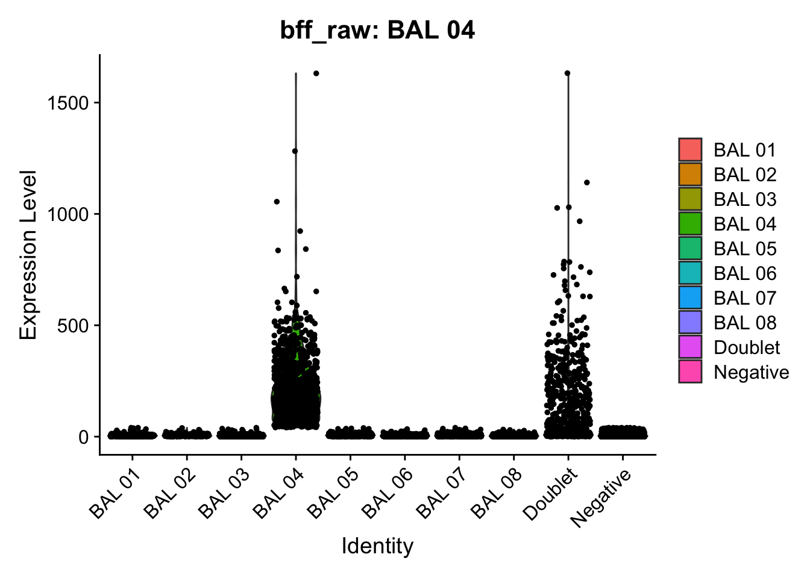
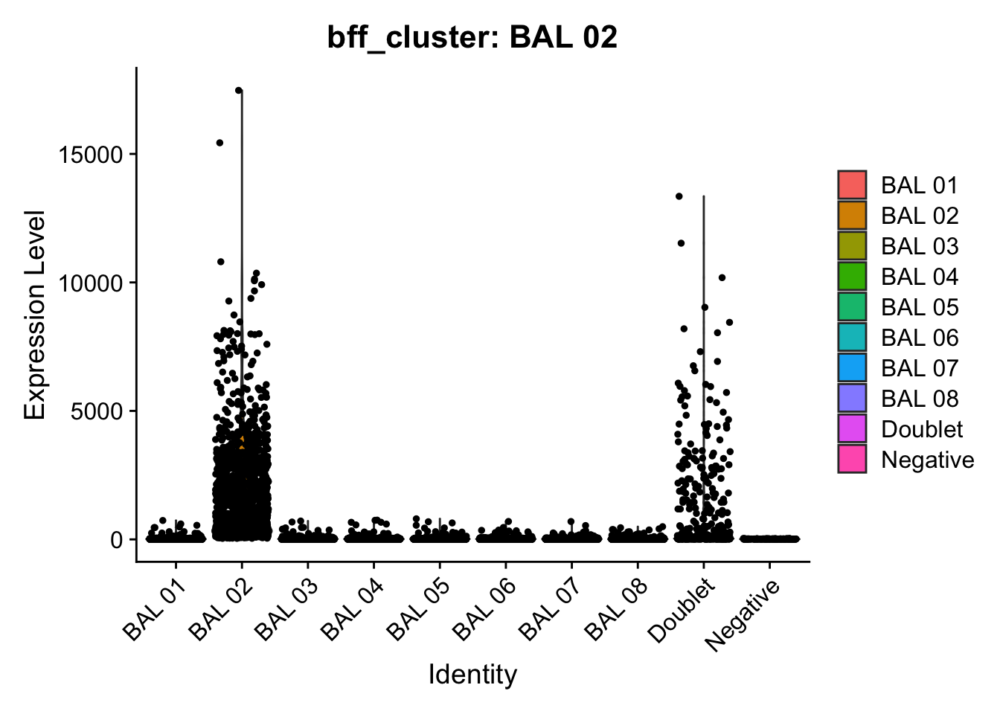
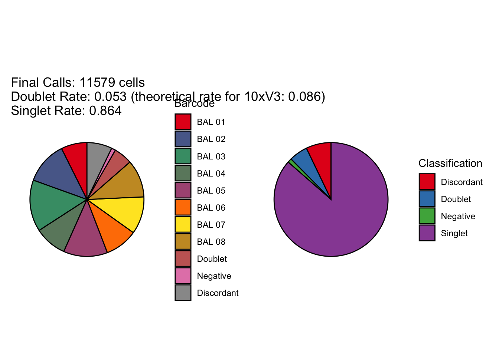
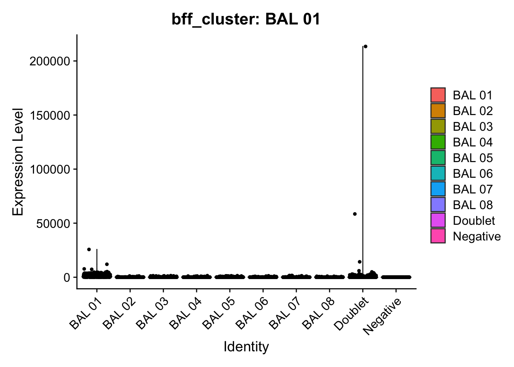
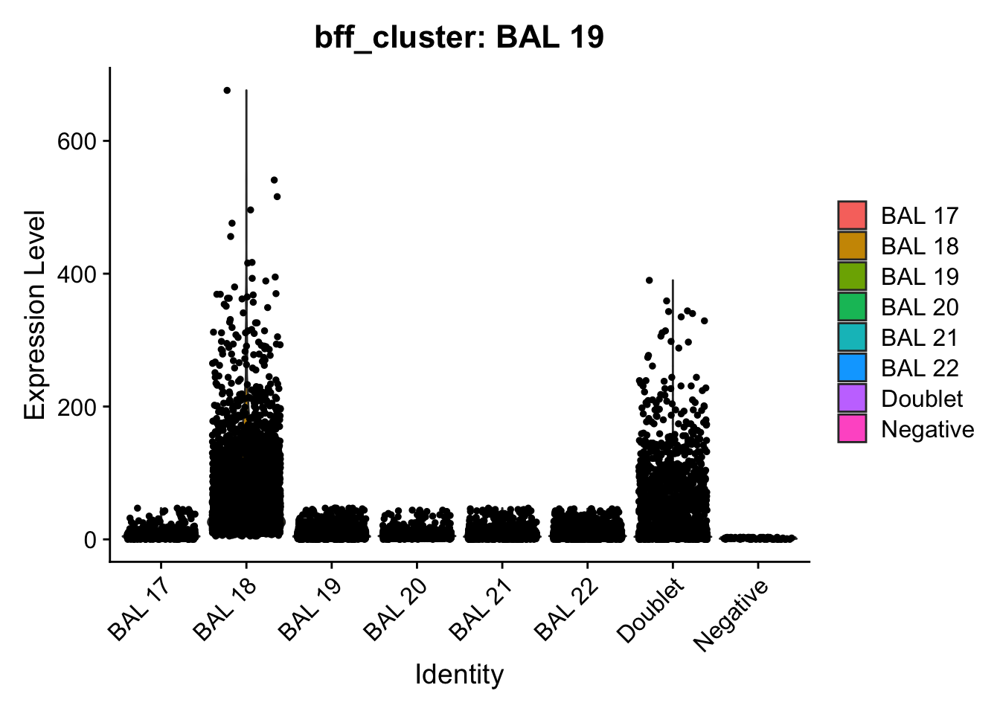
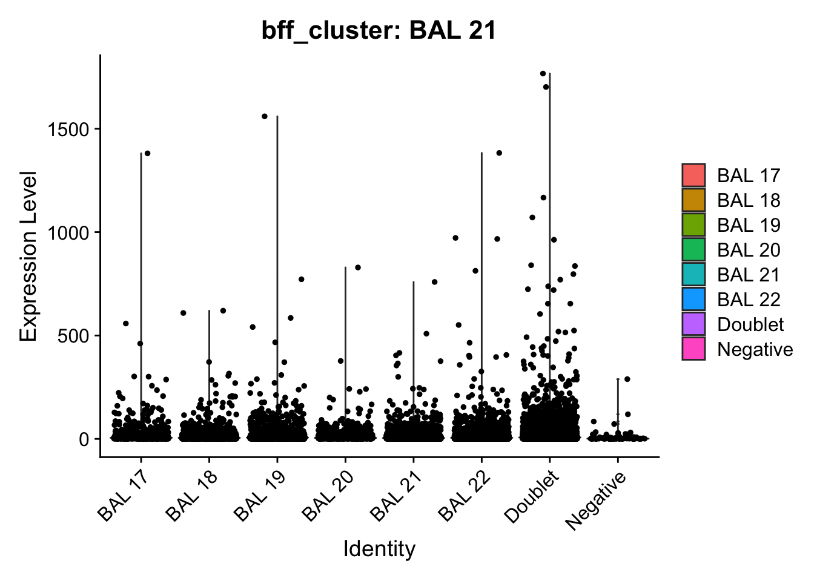
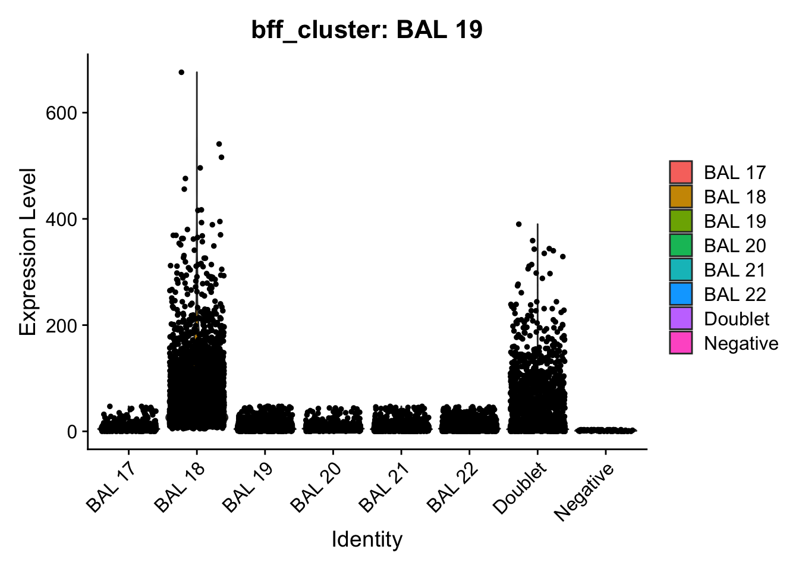
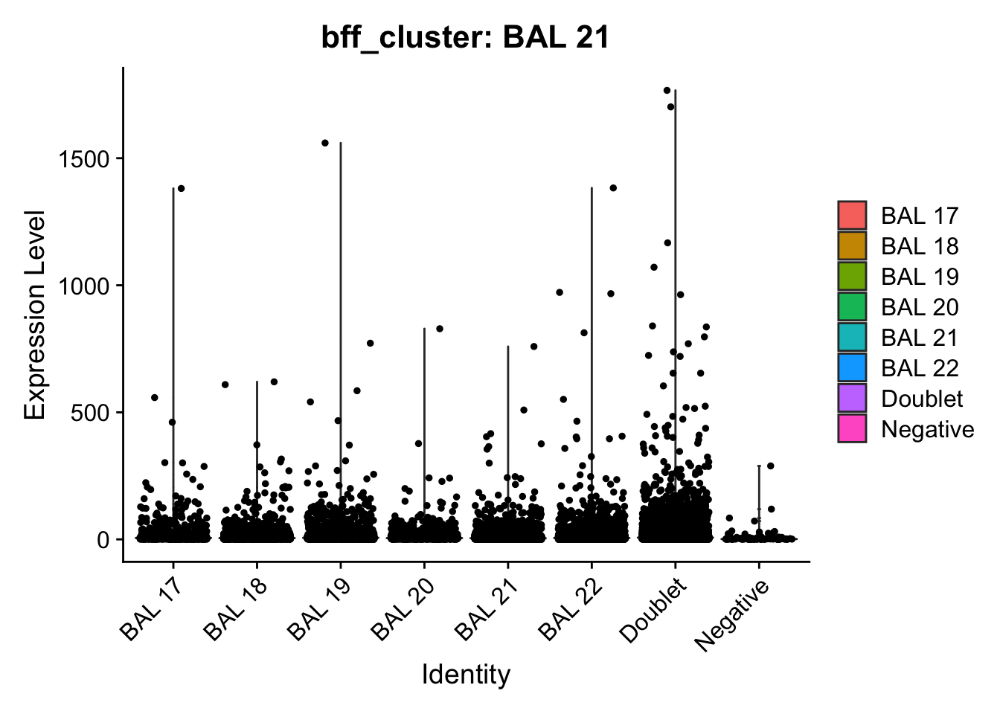
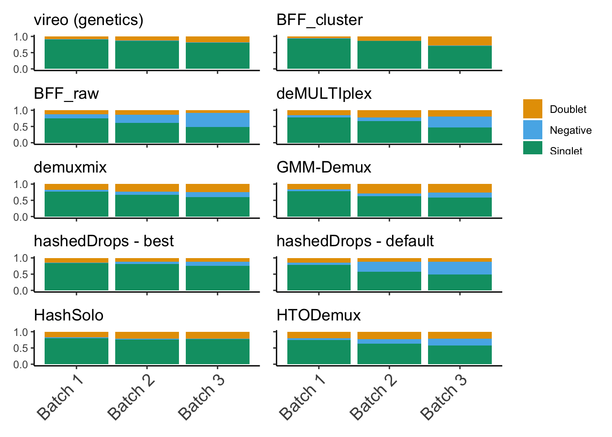
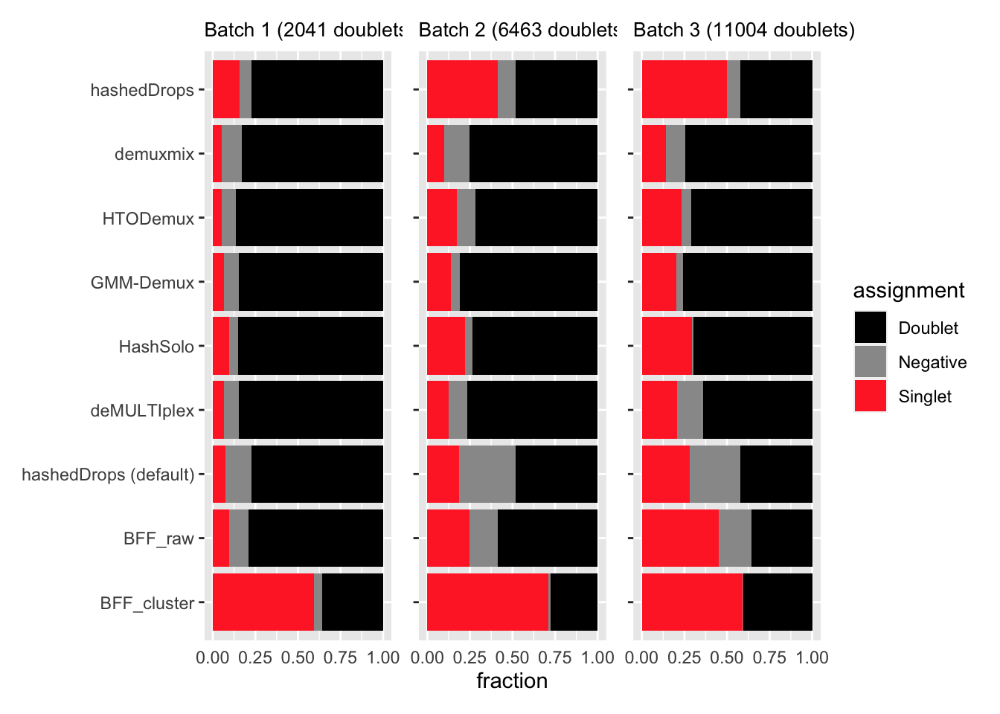

BAL data analysis
George Howitt
2023-05-22
Last updated: 2023-07-05
Checks: 6 1
Knit directory: hashtag-demux-paper/
This reproducible R Markdown analysis was created with workflowr (version 1.7.0). The Checks tab describes the reproducibility checks that were applied when the results were created. The Past versions tab lists the development history.
Great! Since the R Markdown file has been committed to the Git repository, you know the exact version of the code that produced these results.
Great job! The global environment was empty. Objects defined in the global environment can affect the analysis in your R Markdown file in unknown ways. For reproduciblity it’s best to always run the code in an empty environment.
The command set.seed(20230522) was run prior to running
the code in the R Markdown file. Setting a seed ensures that any results
that rely on randomness, e.g. subsampling or permutations, are
reproducible.
Great job! Recording the operating system, R version, and package versions is critical for reproducibility.
Nice! There were no cached chunks for this analysis, so you can be confident that you successfully produced the results during this run.
Using absolute paths to the files within your workflowr project makes it difficult for you and others to run your code on a different machine. Change the absolute path(s) below to the suggested relative path(s) to make your code more reproducible.
| absolute | relative |
|---|---|
| ~/singlecell/hashtag-demux-paper/data/BAL_data/batch1_c1_hashsolo.csv | data/BAL_data/batch1_c1_hashsolo.csv |
| ~/singlecell/hashtag-demux-paper/data/BAL_data/batch1_c2_hashsolo.csv | data/BAL_data/batch1_c2_hashsolo.csv |
| ~/singlecell/hashtag-demux-paper/data/BAL_data/batch2_c1_hashsolo.csv | data/BAL_data/batch2_c1_hashsolo.csv |
| ~/singlecell/hashtag-demux-paper/data/BAL_data/batch2_c2_hashsolo.csv | data/BAL_data/batch2_c2_hashsolo.csv |
| ~/singlecell/hashtag-demux-paper/data/BAL_data/batch3_c1_hashsolo.csv | data/BAL_data/batch3_c1_hashsolo.csv |
| ~/singlecell/hashtag-demux-paper/data/BAL_data/batch3_c2_hashsolo.csv | data/BAL_data/batch3_c2_hashsolo.csv |
Great! You are using Git for version control. Tracking code development and connecting the code version to the results is critical for reproducibility.
The results in this page were generated with repository version b8cab8b. See the Past versions tab to see a history of the changes made to the R Markdown and HTML files.
Note that you need to be careful to ensure that all relevant files for
the analysis have been committed to Git prior to generating the results
(you can use wflow_publish or
wflow_git_commit). workflowr only checks the R Markdown
file, but you know if there are other scripts or data files that it
depends on. Below is the status of the Git repository when the results
were generated:
Ignored files:
Ignored: .DS_Store
Ignored: .Rhistory
Ignored: .Rproj.user/
Ignored: data/BAL_data/.DS_Store
Untracked files:
Untracked: .ipynb_checkpoints/
Untracked: Dear editors.docx
Untracked: NAR.cls
Untracked: analysis/Fscore_MCC_comparison.Rmd
Untracked: analysis/cell_line_analysis.Rmd
Untracked: analysis/gmm_demux.Rmd
Untracked: analysis/hashsolo_prep.Rmd
Untracked: analysis/run_GMM_demux_BAL.sh
Untracked: analysis/solid_tissue_analysis.Rmd
Untracked: cover_letter.docx
Untracked: data/BAL_data/batch1_all_methods.SEU.rds
Untracked: data/BAL_data/batch1_c1_donors_original.csv
Untracked: data/BAL_data/batch1_c1_hto_counts_original.csv
Untracked: data/BAL_data/batch1_c1_relabelled.SEU.rds
Untracked: data/BAL_data/batch1_c2_donors_original.csv
Untracked: data/BAL_data/batch1_c2_hto_counts_original.csv
Untracked: data/BAL_data/batch1_c2_relabelled.SEU.rds
Untracked: data/BAL_data/batch1_relabelled.SEU.rds
Untracked: data/BAL_data/batch2_all_methods.SEU.rds
Untracked: data/BAL_data/batch2_c1_donors_original.csv
Untracked: data/BAL_data/batch2_c1_hto_counts_original.csv
Untracked: data/BAL_data/batch2_c1_relabelled.SEU.rds
Untracked: data/BAL_data/batch2_c2_donors_original.csv
Untracked: data/BAL_data/batch2_c2_hto_counts_original.csv
Untracked: data/BAL_data/batch2_c2_relabelled.SEU.rds
Untracked: data/BAL_data/batch2_relabelled.SEU.rds
Untracked: data/BAL_data/batch3_all_methods.SEU.rds
Untracked: data/BAL_data/batch3_c1_donors_original.csv
Untracked: data/BAL_data/batch3_c1_hto_counts_original.csv
Untracked: data/BAL_data/batch3_c1_relabelled.SEU.rds
Untracked: data/BAL_data/batch3_c2_donors_original.csv
Untracked: data/BAL_data/batch3_c2_hto_counts_original.csv
Untracked: data/BAL_data/batch3_c2_relabelled.SEU.rds
Untracked: data/BAL_data/batch3_relabelled.SEU.rds
Untracked: data/adata/batch1_c1_hashsolo.csv
Untracked: data/adata/batch1_c1_hs_n10_d10.csv
Untracked: data/adata/batch1_c1_hs_n10_d20.csv
Untracked: data/adata/batch1_c1_hs_n10_d30.csv
Untracked: data/adata/batch1_c1_hs_n1_d10.csv
Untracked: data/adata/batch1_c1_hs_n1_d20.csv
Untracked: data/adata/batch1_c1_hs_n1_d30.csv
Untracked: data/adata/batch1_c1_hs_n5_d10.csv
Untracked: data/adata/batch1_c1_hs_n5_d30.csv
Untracked: data/adata/batch1_c2_hashsolo.csv
Untracked: data/adata/batch1_c2_hs_n10_d10.csv
Untracked: data/adata/batch1_c2_hs_n10_d20.csv
Untracked: data/adata/batch1_c2_hs_n10_d30.csv
Untracked: data/adata/batch1_c2_hs_n1_d10.csv
Untracked: data/adata/batch1_c2_hs_n1_d20.csv
Untracked: data/adata/batch1_c2_hs_n1_d30.csv
Untracked: data/adata/batch1_c2_hs_n5_d10.csv
Untracked: data/adata/batch1_c2_hs_n5_d30.csv
Untracked: data/adata/batch2_c1_hashsolo.csv
Untracked: data/adata/batch2_c1_hs_n10_d10.csv
Untracked: data/adata/batch2_c1_hs_n10_d20.csv
Untracked: data/adata/batch2_c1_hs_n10_d30.csv
Untracked: data/adata/batch2_c1_hs_n1_d10.csv
Untracked: data/adata/batch2_c1_hs_n1_d20.csv
Untracked: data/adata/batch2_c1_hs_n1_d30.csv
Untracked: data/adata/batch2_c1_hs_n5_d10.csv
Untracked: data/adata/batch2_c1_hs_n5_d30.csv
Untracked: data/adata/batch2_c2_hashsolo.csv
Untracked: data/adata/batch2_c2_hs_n10_d10.csv
Untracked: data/adata/batch2_c2_hs_n10_d20.csv
Untracked: data/adata/batch2_c2_hs_n10_d30.csv
Untracked: data/adata/batch2_c2_hs_n1_d10.csv
Untracked: data/adata/batch2_c2_hs_n1_d20.csv
Untracked: data/adata/batch2_c2_hs_n1_d30.csv
Untracked: data/adata/batch2_c2_hs_n5_d10.csv
Untracked: data/adata/batch2_c2_hs_n5_d30.csv
Untracked: data/adata/batch3_c1_hashsolo.csv
Untracked: data/adata/batch3_c1_hs_n10_d10.csv
Untracked: data/adata/batch3_c1_hs_n10_d20.csv
Untracked: data/adata/batch3_c1_hs_n10_d30.csv
Untracked: data/adata/batch3_c1_hs_n1_d10.csv
Untracked: data/adata/batch3_c1_hs_n1_d20.csv
Untracked: data/adata/batch3_c1_hs_n1_d30.csv
Untracked: data/adata/batch3_c1_hs_n5_d10.csv
Untracked: data/adata/batch3_c1_hs_n5_d30.csv
Untracked: data/adata/batch3_c2_hashsolo.csv
Untracked: data/adata/batch3_c2_hs_n10_d10.csv
Untracked: data/adata/batch3_c2_hs_n10_d20.csv
Untracked: data/adata/batch3_c2_hs_n10_d30.csv
Untracked: data/adata/batch3_c2_hs_n1_d10.csv
Untracked: data/adata/batch3_c2_hs_n1_d20.csv
Untracked: data/adata/batch3_c2_hs_n1_d30.csv
Untracked: data/adata/batch3_c2_hs_n5_d10.csv
Untracked: data/adata/batch3_c2_hs_n5_d30.csv
Untracked: data/adata/solid_tissue_batch1_hashsolo.csv
Untracked: data/adata/solid_tissue_batch2_hashsolo.csv
Untracked: data/solid_tumor_data/
Untracked: figures/QC_plots_new.png
Untracked: figures/Users/
Untracked: filter_wrong_empties.Rmd
Untracked: iscb_long_abstract.docx
Untracked: iscb_long_abstract.pdf
Untracked: oup-authoring-template/
Untracked: output/mean_fscore_mcc.xlsx
Untracked: paper_latex/
Unstaged changes:
Modified: analysis/index.Rmd
Modified: data/.DS_Store
Deleted: data/GMM-Demux/SSD_mtx/barcodes.tsv.gz
Deleted: data/GMM-Demux/SSD_mtx/features.tsv.gz
Deleted: data/GMM-Demux/SSD_mtx/matrix.mtx.gz
Deleted: data/GMM-Demux/batch1_c1_hto_counts_transpose.csv
Deleted: data/GMM-Demux/batch1_c2_hto_counts_transpose.csv
Deleted: data/GMM-Demux/batch2_c1_hto_counts_transpose.csv
Deleted: data/GMM-Demux/batch2_c2_hto_counts_transpose.csv
Deleted: data/GMM-Demux/batch3_c1_hto_counts_transpose.csv
Deleted: data/GMM-Demux/batch3_c2_hto_counts_transpose.csv
Deleted: data/GMM-Demux/gmm_out_LMO_c1/full_report/GMM_full.config
Deleted: data/GMM-Demux/gmm_out_LMO_c1/full_report/GMM_full.csv
Deleted: data/GMM-Demux/gmm_out_LMO_c1/simplified_report/GMM_simplified.config
Deleted: data/GMM-Demux/gmm_out_LMO_c1/simplified_report/GMM_simplified.csv
Deleted: data/GMM-Demux/gmm_out_LMO_c2/full_report/GMM_full.config
Deleted: data/GMM-Demux/gmm_out_LMO_c2/full_report/GMM_full.csv
Deleted: data/GMM-Demux/gmm_out_LMO_c2/simplified_report/GMM_simplified.config
Deleted: data/GMM-Demux/gmm_out_LMO_c2/simplified_report/GMM_simplified.csv
Deleted: data/GMM-Demux/gmm_out_LMO_c3/full_report/GMM_full.config
Deleted: data/GMM-Demux/gmm_out_LMO_c3/full_report/GMM_full.csv
Deleted: data/GMM-Demux/gmm_out_LMO_c3/simplified_report/GMM_simplified.config
Deleted: data/GMM-Demux/gmm_out_LMO_c3/simplified_report/GMM_simplified.csv
Deleted: data/GMM-Demux/gmm_out_batch1_c1/full_report/GMM_full.config
Deleted: data/GMM-Demux/gmm_out_batch1_c1/full_report/GMM_full.csv
Deleted: data/GMM-Demux/gmm_out_batch1_c1/simplified_report/GMM_simplified.config
Deleted: data/GMM-Demux/gmm_out_batch1_c1/simplified_report/GMM_simplified.csv
Deleted: data/GMM-Demux/gmm_out_batch1_c2/full_report/GMM_full.config
Deleted: data/GMM-Demux/gmm_out_batch1_c2/full_report/GMM_full.csv
Deleted: data/GMM-Demux/gmm_out_batch1_c2/simplified_report/GMM_simplified.config
Deleted: data/GMM-Demux/gmm_out_batch1_c2/simplified_report/GMM_simplified.csv
Deleted: data/GMM-Demux/gmm_out_batch2_c1/full_report/GMM_full.config
Deleted: data/GMM-Demux/gmm_out_batch2_c1/full_report/GMM_full.csv
Deleted: data/GMM-Demux/gmm_out_batch2_c1/simplified_report/GMM_simplified.config
Deleted: data/GMM-Demux/gmm_out_batch2_c1/simplified_report/GMM_simplified.csv
Deleted: data/GMM-Demux/gmm_out_batch2_c2/full_report/GMM_full.config
Deleted: data/GMM-Demux/gmm_out_batch2_c2/full_report/GMM_full.csv
Deleted: data/GMM-Demux/gmm_out_batch2_c2/simplified_report/GMM_simplified.config
Deleted: data/GMM-Demux/gmm_out_batch2_c2/simplified_report/GMM_simplified.csv
Deleted: data/GMM-Demux/gmm_out_batch3_c1/full_report/GMM_full.config
Deleted: data/GMM-Demux/gmm_out_batch3_c1/full_report/GMM_full.csv
Deleted: data/GMM-Demux/gmm_out_batch3_c1/simplified_report/GMM_simplified.config
Deleted: data/GMM-Demux/gmm_out_batch3_c1/simplified_report/GMM_simplified.csv
Deleted: data/GMM-Demux/gmm_out_batch3_c2/full_report/GMM_full.config
Deleted: data/GMM-Demux/gmm_out_batch3_c2/full_report/GMM_full.csv
Deleted: data/GMM-Demux/gmm_out_batch3_c2/simplified_report/GMM_simplified.config
Deleted: data/GMM-Demux/gmm_out_batch3_c2/simplified_report/GMM_simplified.csv
Deleted: data/GMM-Demux/lmo_counts_capture1_transpose.csv
Deleted: data/GMM-Demux/lmo_counts_capture2_transpose.csv
Deleted: data/GMM-Demux/lmo_counts_capture3_transpose.csv
Deleted: data/GMM-Demux/run_GMM_demux_BAL.sh
Deleted: data/GMM-Demux/run_GMM_demux_LMO.sh
Modified: data/adata/batch1_HTOs.csv
Modified: data/adata/batch1_c1_barcodes.csv
Modified: data/adata/batch1_c1_counts.mtx
Modified: data/adata/batch1_c2_barcodes.csv
Modified: data/adata/batch1_c2_counts.mtx
Modified: data/adata/batch2_HTOs.csv
Modified: data/adata/batch2_c1_barcodes.csv
Modified: data/adata/batch2_c1_counts.mtx
Modified: data/adata/batch2_c2_barcodes.csv
Modified: data/adata/batch2_c2_counts.mtx
Modified: data/adata/batch3_HTOs.csv
Modified: data/adata/batch3_c1_barcodes.csv
Modified: data/adata/batch3_c1_counts.mtx
Modified: data/adata/batch3_c2_barcodes.csv
Modified: data/adata/batch3_c2_counts.mtx
Deleted: data/batch1_c1_donors.csv
Deleted: data/batch1_c1_hto_counts.csv
Deleted: data/batch1_c2_donors.csv
Deleted: data/batch1_c2_hto_counts.csv
Deleted: data/batch1_hto_counts.csv
Deleted: data/batch2_c1_donors.csv
Deleted: data/batch2_c1_hto_counts.csv
Deleted: data/batch2_c2_donors.csv
Deleted: data/batch2_c2_hto_counts.csv
Deleted: data/batch2_hto_counts.csv
Deleted: data/batch3_c1_donors.csv
Deleted: data/batch3_c1_hto_counts.csv
Deleted: data/batch3_c2_donors.csv
Deleted: data/batch3_c2_hto_counts.csv
Deleted: data/batch3_hto_counts.csv
Deleted: data/lmo_counts.csv
Deleted: data/lmo_counts_capture1.csv
Deleted: data/lmo_counts_capture2.csv
Deleted: data/lmo_counts_capture3.csv
Deleted: data/lmo_donors.csv
Deleted: data/lmo_donors_capture1.csv
Deleted: data/lmo_donors_capture2.csv
Deleted: data/lmo_donors_capture3.csv
Modified: figures/QC_plots.png
Modified: figures/category_fractions.png
Modified: hashsolo_calls.ipynb
Modified: notebook_for_paper.Rmd
Note that any generated files, e.g. HTML, png, CSS, etc., are not included in this status report because it is ok for generated content to have uncommitted changes.
These are the previous versions of the repository in which changes were
made to the R Markdown (analysis/BAL_analysis.Rmd) and HTML
(docs/BAL_analysis.html) files. If you’ve configured a
remote Git repository (see ?wflow_git_remote), click on the
hyperlinks in the table below to view the files as they were in that
past version.
| File | Version | Author | Date | Message |
|---|---|---|---|---|
| Rmd | b8cab8b | George Howitt | 2023-07-05 | wflow_publish("analysis/BAL_analysis.Rmd") |
#Load libraries
suppressPackageStartupMessages({
library(here)
library(BiocStyle)
library(dplyr)
library(janitor)
library(ggplot2)
library(cowplot)
library(patchwork)
library(DropletUtils)
library(tidyverse)
library(scuttle)
library(scater)
library(Seurat)
library(pheatmap)
library(speckle)
library(dittoSeq)
library(cellhashR)
library(RColorBrewer)
library(demuxmix)
library(ComplexHeatmap)
library(tidyHeatmap)
library(viridis)
})BAL data set
This notebook contains the analysis code for all results and figures relating to the BAL data set in the paper “Benchmarking single-cell hashtag oligo demultiplexing methods”.
The data set consists of three batches with eight genetically distinct samples in each. Each batch was processed in two separate captures. We run all the demultiplexing methods on a per-capture level before then recombining into batch level objects for later analysis.
Data loading and reduction
Load in counts matrices and genetic IDs.
batch1_c1_counts <- read.csv(here("data", "BAL_data", "batch1_c1_hto_counts.csv"),
check.names = FALSE, row.names = 1)
batch1_c2_counts <- read.csv(here("data", "BAL_data", "batch1_c2_hto_counts.csv"),
check.names = FALSE, row.names = 1)
batch2_c1_counts <- read.csv(here("data", "BAL_data", "batch2_c1_hto_counts.csv"),
check.names = FALSE, row.names = 1)
batch2_c2_counts <- read.csv(here("data", "BAL_data", "batch2_c2_hto_counts.csv"),
check.names = FALSE, row.names = 1)
batch3_c1_counts <- read.csv(here("data", "BAL_data", "batch3_c1_hto_counts.csv"),
check.names = FALSE, row.names = 1)
batch3_c2_counts <- read.csv(here("data", "BAL_data", "batch3_c2_hto_counts.csv"),
check.names = FALSE, row.names = 1)batch1_c1_donors <- read.csv(here("data", "BAL_data", "batch1_c1_donors.csv"), row.names = 1)
batch1_c2_donors <- read.csv(here("data", "BAL_data", "batch1_c2_donors.csv"), row.names = 1)
batch2_c1_donors <- read.csv(here("data", "BAL_data", "batch2_c1_donors.csv"), row.names = 1)
batch2_c2_donors <- read.csv(here("data", "BAL_data", "batch2_c2_donors.csv"), row.names = 1)
batch3_c1_donors <- read.csv(here("data", "BAL_data", "batch3_c1_donors.csv"), row.names = 1)
batch3_c2_donors <- read.csv(here("data", "BAL_data", "batch3_c2_donors.csv"), row.names = 1)Make Seurat objects
seu1_c1 <- CreateSeuratObject(counts = batch1_c1_counts, assay = "HTO")
seu1_c2 <- CreateSeuratObject(counts = batch1_c2_counts, assay = "HTO")
seu2_c1 <- CreateSeuratObject(counts = batch2_c1_counts, assay = "HTO")
seu2_c2 <- CreateSeuratObject(counts = batch2_c2_counts, assay = "HTO")
seu3_c1 <- CreateSeuratObject(counts = batch3_c1_counts, assay = "HTO")
seu3_c2 <- CreateSeuratObject(counts = batch3_c2_counts, assay = "HTO")seu1_c1$Barcode <- colnames(seu1_c1)
seu1_c1$capture <- "capture_1"
seu1_c2$Barcode <- colnames(seu1_c2)
seu1_c2$capture <- "capture_2"
seu2_c1$Barcode <- colnames(seu2_c1)
seu2_c1$capture <- "capture_1"
seu2_c2$Barcode <- colnames(seu2_c2)
seu2_c2$capture <- "capture_2"
seu3_c1$Barcode <- colnames(seu3_c1)
seu3_c1$capture <- "capture_1"
seu3_c2$Barcode <- colnames(seu3_c2)
seu3_c2$capture <- "capture_2"Add genetic donor information to Seurat objects
seu1_c1$genetic_donor <- batch1_c1_donors$genetic_donor
seu1_c2$genetic_donor <- batch1_c2_donors$genetic_donor
seu2_c1$genetic_donor <- batch2_c1_donors$genetic_donor
seu2_c2$genetic_donor <- batch2_c2_donors$genetic_donor
seu3_c1$genetic_donor <- batch3_c1_donors$genetic_donor
seu3_c2$genetic_donor <- batch3_c2_donors$genetic_donorMerge into batch-level objects
seu1 <- merge(seu1_c1, seu1_c2)
seu2 <- merge(seu2_c1, seu2_c2)
seu3 <- merge(seu3_c1, seu3_c2)For each of the batches need lists associating the HTOs with the genetic donors.
HTO_list_batch1 <- c("BAL 01", "BAL 02", "BAL 03", "BAL 04", "BAL 05",
"BAL 06", "BAL 07", "BAL 08", "Doublet", "Negative")
donor_list_batch1 <- list("BAL A" = "BAL 01",
"BAL B" = "BAL 02",
"BAL C" = "BAL 03",
"BAL D" = "BAL 04",
"BAL E" = "BAL 05",
"BAL F" = "BAL 06",
"BAL G" = "BAL 07",
"BAL H" = "BAL 08",
"Doublet" = "Doublet",
"Negative" = "Negative")
HTO_donor_list_batch1 <- list("BAL 01" = "BAL A",
"BAL 02" = "BAL B",
"BAL 03" = "BAL C",
"BAL 04" = "BAL D",
"BAL 05" = "BAL E",
"BAL 06" = "BAL F",
"BAL 07" = "BAL G",
"BAL 08" = "BAL H",
"Doublet" = "Doublet",
"Negative" = "Negative")
HTO_list_batch2 <- c("BAL 09", "BAL 10", "BAL 11", "BAL 12", "BAL 13",
"BAL 14", "BAL 15", "BAL 16", "Doublet", "Negative")
donor_list_batch2 <- list("BAL I" = "BAL 09",
"BAL J" = "BAL 10",
"BAL K" = "BAL 11",
"BAL L" = "BAL 12",
"BAL M" = "BAL 13",
"BAL N" = "BAL 14",
"BAL O" = "BAL 15",
"BAL P" = "BAL 16",
"Doublet" = "Doublet",
"Negative" = "Negative")
HTO_donor_list_batch2 <- list("BAL 09" = "BAL I",
"BAL 10" = "BAL J",
"BAL 11" = "BAL K",
"BAL 12" = "BAL L",
"BAL 13" = "BAL M",
"BAL 14" = "BAL N",
"BAL 15" = "BAL O",
"BAL 16" = "BAL P",
"Doublet" = "Doublet",
"Negative" = "Negative")
HTO_list_batch3 <- c("BAL 17", "BAL 18", "BAL 19", "BAL 20", "BAL 21",
"BAL 22", "BAL 23", "BAL 24", "Doublet", "Negative")
donor_list_batch3 <- list("BAL Q" = "BAL 17",
"BAL R" = "BAL 18",
"BAL S" = "BAL 19",
"BAL T" = "BAL 20",
"BAL U" = "BAL 21",
"BAL V" = "BAL 22",
"BAL W" = "BAL 23",
"BAL X" = "BAL 24",
"Doublet" = "Doublet",
"Negative" = "Negative")
HTO_donor_list_batch3 <- list("BAL 17" = "BAL Q",
"BAL 18" = "BAL R",
"BAL 19" = "BAL S",
"BAL 20" = "BAL T",
"BAL 21" = "BAL U",
"BAL 22" = "BAL V",
"BAL 23" = "BAL W",
"BAL 24" = "BAL X",
"Doublet" = "Doublet",
"Negative" = "Negative")Compute PCAs and tSNEs
DefaultAssay(seu1) <- "HTO"
seu1 <- NormalizeData(seu1, assay = "HTO", normalization.method = "CLR")Normalizing across featuresseu1 <- ScaleData(seu1, features = rownames(seu1),
verbose = FALSE)
seu1 <- RunPCA(seu1, features = rownames(seu1), approx = FALSE, verbose = FALSE)
seu1 <- RunTSNE(seu1, dims = 1:8, perplexity = 100, check_duplicates = FALSE, verbose = FALSE)
DefaultAssay(seu2) <- "HTO"
seu2 <- NormalizeData(seu2, assay = "HTO", normalization.method = "CLR")Normalizing across featuresseu2 <- ScaleData(seu2, features = rownames(seu2),
verbose = FALSE)
seu2 <- RunPCA(seu2, features = rownames(seu2), approx = FALSE, verbose = FALSE)
seu2 <- RunTSNE(seu2, dims = 1:8, perplexity = 100, check_duplicates = FALSE, verbose = FALSE)
DefaultAssay(seu3) <- "HTO"
seu3 <- NormalizeData(seu3, assay = "HTO", normalization.method = "CLR")Normalizing across featuresseu3 <- ScaleData(seu3, features = rownames(seu3),
verbose = FALSE)
seu3 <- RunPCA(seu3, features = rownames(seu3), approx = FALSE, verbose = FALSE)
seu3 <- RunTSNE(seu3, dims = 1:8, perplexity = 100, check_duplicates = FALSE, verbose = FALSE)Same for individual captures
DefaultAssay(seu1_c1) <- "HTO"
seu1_c1 <- NormalizeData(seu1_c1, assay = "HTO", normalization.method = "CLR")Normalizing across featuresseu1_c1 <- ScaleData(seu1_c1, features = rownames(seu1_c1),
verbose = FALSE)
seu1_c1 <- RunPCA(seu1_c1, features = rownames(seu1_c1), approx = FALSE, verbose = FALSE)
seu1_c1 <- RunTSNE(seu1_c1, dims = 1:8, perplexity = 100, check_duplicates = FALSE, verbose = FALSE)
DefaultAssay(seu1_c2) <- "HTO"
seu1_c2 <- NormalizeData(seu1_c2, assay = "HTO", normalization.method = "CLR")Normalizing across featuresseu1_c2 <- ScaleData(seu1_c2, features = rownames(seu1_c2),
verbose = FALSE)
seu1_c2 <- RunPCA(seu1_c2, features = rownames(seu1_c2), approx = FALSE, verbose = FALSE)
seu1_c2 <- RunTSNE(seu1_c2, dims = 1:8, perplexity = 100, check_duplicates = FALSE, verbose = FALSE)
seu2_c1 <- NormalizeData(seu2_c1, assay = "HTO", normalization.method = "CLR")Normalizing across featuresseu2_c1 <- ScaleData(seu2_c1, features = rownames(seu2_c1),
verbose = FALSE)
seu2_c1 <- RunPCA(seu2_c1, features = rownames(seu2_c1), approx = FALSE, verbose = FALSE)
seu2_c1 <- RunTSNE(seu2_c1, dims = 1:8, perplexity = 100, check_duplicates = FALSE, verbose = FALSE)
DefaultAssay(seu2_c2) <- "HTO"
seu2_c2 <- NormalizeData(seu2_c2, assay = "HTO", normalization.method = "CLR")Normalizing across featuresseu2_c2 <- ScaleData(seu2_c2, features = rownames(seu2_c2),
verbose = FALSE)
seu2_c2 <- RunPCA(seu2_c2, features = rownames(seu2_c2), approx = FALSE, verbose = FALSE)
seu2_c2 <- RunTSNE(seu2_c2, dims = 1:8, perplexity = 100, check_duplicates = FALSE, verbose = FALSE)
seu3_c1 <- NormalizeData(seu3_c1, assay = "HTO", normalization.method = "CLR")Normalizing across featuresseu3_c1 <- ScaleData(seu3_c1, features = rownames(seu3_c1),
verbose = FALSE)
seu3_c1 <- RunPCA(seu3_c1, features = rownames(seu3_c1), approx = FALSE, verbose = FALSE)
seu3_c1 <- RunTSNE(seu3_c1, dims = 1:8, perplexity = 100, check_duplicates = FALSE, verbose = FALSE)
DefaultAssay(seu3_c2) <- "HTO"
seu3_c2 <- NormalizeData(seu3_c2, assay = "HTO", normalization.method = "CLR")Normalizing across featuresseu3_c2 <- ScaleData(seu3_c2, features = rownames(seu3_c2),
verbose = FALSE)
seu3_c2 <- RunPCA(seu3_c2, features = rownames(seu3_c2), approx = FALSE, verbose = FALSE)
seu3_c2 <- RunTSNE(seu3_c2, dims = 1:8, perplexity = 100, check_duplicates = FALSE, verbose = FALSE)QC plots
Density plots per barcode. In ideal conditions the density of the hashtag counts should appear bimodal, with a lower peak corresponding to the background and the higher peak corresponding to the signal.
df1 <- as.data.frame(t(seu1[["HTO"]]@counts))
df1 %>%
pivot_longer(cols = starts_with("BAL")) %>%
mutate(logged = log(value + 1)) %>%
ggplot(aes(x = logged)) +
xlab("log(counts)") +
xlim(0.1,8) +
ggtitle("Batch 1") +
geom_density(adjust = 5) +
facet_wrap(~name, scales = "fixed", ncol = 4) +
theme(axis.title.x = element_blank(),
axis.text.x = element_blank(),
axis.ticks = element_blank()) -> p1
df2 <- as.data.frame(t(seu2[["HTO"]]@counts))
df2 %>%
pivot_longer(cols = starts_with("BAL")) %>%
mutate(logged = log(value + 1)) %>%
ggplot(aes(x = logged)) +
xlab("log(counts)") +
xlim(0.1, 8) +
ggtitle("Batch 2") +
geom_density(adjust = 5) +
facet_wrap(~name, scales = "fixed", ncol = 4) +
theme(axis.title.x = element_blank(),
axis.text.x = element_blank(),
axis.ticks.x = element_blank()) -> p2
df3 <- as.data.frame(t(seu3[["HTO"]]@counts))
df3 %>%
pivot_longer(cols = starts_with("BAL")) %>%
mutate(logged = log(value + 1)) %>%
ggplot(aes(x = logged)) +
xlab("log(counts)") +
xlim(0.1,8) +
ggtitle("Batch 3") +
geom_density(adjust = 5) +
facet_wrap(~name, scales = "fixed", ncol = 4) +
theme(axis.ticks = element_blank()) -> p3
(p1 / p2 / p3) + plot_annotation(tag_levels = 'a')Warning: Removed 2242 rows containing non-finite values (`stat_density()`).Warning: Removed 1241 rows containing non-finite values (`stat_density()`).Warning: Removed 4490 rows containing non-finite values (`stat_density()`).tSNE plots
p4 <- DimPlot(seu1, group.by = "genetic_donor") +
ggtitle("Batch 1") +
theme(axis.text.x = element_blank(), axis.ticks.x = element_blank(),
axis.text.y = element_blank(), axis.ticks.y = element_blank(),
axis.line.x = element_blank(), axis.line.y = element_blank(),
axis.title.x = element_blank(), axis.title.y = element_blank(),
legend.text=element_text(size = 5),
plot.margin = margin(0,0,0,0,"cm"))
p5 <- DimPlot(seu2, group.by = "genetic_donor") +
ggtitle("Batch 2") +
xlab("") +
theme(axis.text.x = element_blank(), axis.ticks.x = element_blank(),
axis.text.y = element_blank(), axis.ticks.y = element_blank(),
axis.line.x = element_blank(), axis.line.y = element_blank(),
axis.title.x = element_blank(),
legend.text=element_text(size=5),
plot.margin = margin(0,0,0,0,"cm"))
p6 <- DimPlot(seu3, group.by = "genetic_donor") +
ggtitle("Batch 3") +
ylab("") +
theme(axis.text.x = element_blank(), axis.ticks.x = element_blank(),
axis.text.y = element_blank(), axis.ticks.y = element_blank(),
axis.line.x = element_blank(), axis.line.y = element_blank(),
axis.title.y = element_blank(),
legend.text=element_text(size = 5),
plot.margin = margin(0,0,0,0,"cm"))
p4 / p5 / p6(((p1 / p2 / p3) | (p4 / p5 / p6)) + plot_annotation(tag_levels = 'a')) &
theme(plot.title = element_text(face = "plain", size = 10),
plot.tag = element_text(face = 'plain'))Warning: Removed 2242 rows containing non-finite values (`stat_density()`).Warning: Removed 1241 rows containing non-finite values (`stat_density()`).Warning: Removed 4490 rows containing non-finite values (`stat_density()`).#ggsave(here("paper_latex", "figures", "QC_plots_new.png"),
# plot = (((p1 / p2 / p3) | (p4 / p5 / p6)) + plot_annotation(tag_levels = 'a')) &
# theme(plot.title = element_text(face = "plain", size = 10),
# plot.tag = element_text(face = 'plain')),
# device = "png",
#path = here("paper_latex"figures"),
# width = 10, height = 9,
# units = "in",
# dpi = 300)Checking if there’s any noticeable difference between the combined results and the capture-separated results.
p4 <- DimPlot(seu1_c1, group.by = "genetic_donor") +
ggtitle("Batch 1 (capture 1)") +
NoLegend() +
theme(axis.text.x = element_blank(), axis.ticks.x = element_blank(),
axis.text.y = element_blank(), axis.ticks.y = element_blank(),
axis.line.x = element_blank(), axis.line.y = element_blank(),
axis.title.x = element_blank(), axis.title.y = element_blank(),
plot.margin = margin(0,0,0,0,"cm"))
p5 <- DimPlot(seu2_c1, group.by = "genetic_donor") +
ggtitle("Batch 2 (capture 1)") +
xlab("") +
theme(axis.text.x = element_blank(), axis.ticks.x = element_blank(),
axis.text.y = element_blank(), axis.ticks.y = element_blank(),
axis.line.x = element_blank(), axis.line.y = element_blank(),
axis.title.x = element_blank(),
plot.margin = margin(0,0,0,0,"cm"))
p6 <- DimPlot(seu3_c1, group.by = "genetic_donor") +
ggtitle("Batch 3 (capture 1)") +
NoLegend() +
ylab("") +
theme(axis.text.x = element_blank(), axis.ticks.x = element_blank(),
axis.text.y = element_blank(), axis.ticks.y = element_blank(),
axis.line.x = element_blank(), axis.line.y = element_blank(),
axis.title.y = element_blank(),
plot.margin = margin(0,0,0,0,"cm"))
p7 <- DimPlot(seu1_c2, group.by = "genetic_donor") +
ggtitle("Batch 1 (capture 2)") +
NoLegend() +
theme(axis.text.x = element_blank(), axis.ticks.x = element_blank(),
axis.text.y = element_blank(), axis.ticks.y = element_blank(),
axis.line.x = element_blank(), axis.line.y = element_blank(),
axis.title.x = element_blank(), axis.title.y = element_blank(),
plot.margin = margin(0,0,0,0,"cm"))
p8 <- DimPlot(seu2_c2, group.by = "genetic_donor") +
ggtitle("Batch 2 (capture 2)") +
xlab("") +
theme(axis.text.x = element_blank(), axis.ticks.x = element_blank(),
axis.text.y = element_blank(), axis.ticks.y = element_blank(),
axis.line.x = element_blank(), axis.line.y = element_blank(),
axis.title.x = element_blank(),
plot.margin = margin(0,0,0,0,"cm"))
p9 <- DimPlot(seu3_c2, group.by = "genetic_donor") +
ggtitle("Batch 3 (capture 2)") +
NoLegend() +
ylab("") +
theme(axis.text.x = element_blank(), axis.ticks.x = element_blank(),
axis.text.y = element_blank(), axis.ticks.y = element_blank(),
axis.line.x = element_blank(), axis.line.y = element_blank(),
axis.title.y = element_blank(),
plot.margin = margin(0,0,0,0,"cm"))(p1 / p2 / p3) | (p4 / p5 / p6) | (p7 / p8 / p9)Warning: Removed 2242 rows containing non-finite values (`stat_density()`).Warning: Removed 1241 rows containing non-finite values (`stat_density()`).Warning: Removed 4490 rows containing non-finite values (`stat_density()`).Hashtag-based demultiplexing.
This is where we run each of the demultiplexing methods on each capture of each batch.
hashedDrops
This function creates a list of hashedDrops calls. Its defaults are the same as hashedDrops
create_hashedDrops_factor <- function(seurat_object, confident.min = 2,
doublet.nmads = 3, doublet.min = 2) {
hto_counts <- GetAssayData(seurat_object[["HTO"]], slot = "counts")
hash_stats <- DropletUtils::hashedDrops(hto_counts, confident.min = confident.min,
doublet.nmads = doublet.nmads, doublet.min = doublet.min)
hash_stats$Best <- rownames(seurat_object[["HTO"]])[hash_stats$Best]
hash_stats$Second <- rownames(seurat_object[["HTO"]])[hash_stats$Second]
HTO_assignments <- factor(case_when(
hash_stats$Confident == TRUE ~ hash_stats$Best,
hash_stats$Doublet == TRUE ~ "Doublet",
TRUE ~ "Negative"))
return(HTO_assignments)
}Making factors with best parameters
seu1_c1$hashedDrops_calls <- create_hashedDrops_factor(seu1_c1, confident.min = 0.5, doublet.nmads = 3, doublet.min = 2)
seu1_c2$hashedDrops_calls <- create_hashedDrops_factor(seu1_c2, confident.min = 0.5, doublet.nmads = 3, doublet.min = 2)
seu2_c1$hashedDrops_calls <- create_hashedDrops_factor(seu2_c1, confident.min = 0.5, doublet.nmads = 3, doublet.min = 2)
seu2_c2$hashedDrops_calls <- create_hashedDrops_factor(seu2_c2, confident.min = 0.5, doublet.nmads = 3, doublet.min = 2)
seu3_c1$hashedDrops_calls <- create_hashedDrops_factor(seu3_c1, confident.min = 0.5, doublet.nmads = 3, doublet.min = 2)
seu3_c2$hashedDrops_calls <- create_hashedDrops_factor(seu3_c2, confident.min = 0.5, doublet.nmads = 3, doublet.min = 2)Now with default parameters
seu1_c1$hashedDrops_default_calls <- create_hashedDrops_factor(seu1_c1)
seu1_c2$hashedDrops_default_calls <- create_hashedDrops_factor(seu1_c2)
seu2_c1$hashedDrops_default_calls <- create_hashedDrops_factor(seu2_c1)
seu2_c2$hashedDrops_default_calls <- create_hashedDrops_factor(seu2_c2)
seu3_c1$hashedDrops_default_calls <- create_hashedDrops_factor(seu3_c1)
seu3_c2$hashedDrops_default_calls <- create_hashedDrops_factor(seu3_c2)Hashsolo
HashSolo is a scanpy program. Needs a bit of prep
Write to anndata compatible files Counts
library(Matrix)
Attaching package: 'Matrix'The following objects are masked from 'package:tidyr':
expand, pack, unpackThe following object is masked from 'package:S4Vectors':
expandwriteMM(seu1_c1@assays$HTO@counts, here("data", "BAL_data", "adata", "batch1_c1_counts.mtx"))NULLwriteMM(seu1_c2@assays$HTO@counts, here("data", "BAL_data", "adata", "batch1_c2_counts.mtx"))NULLwriteMM(seu2_c1@assays$HTO@counts, here("data", "BAL_data", "adata", "batch2_c1_counts.mtx"))NULLwriteMM(seu2_c2@assays$HTO@counts, here("data", "BAL_data", "adata", "batch2_c2_counts.mtx"))NULLwriteMM(seu3_c1@assays$HTO@counts, here("data", "BAL_data", "adata", "batch3_c1_counts.mtx"))NULLwriteMM(seu3_c2@assays$HTO@counts, here("data", "BAL_data", "adata", "batch3_c2_counts.mtx"))NULLBarcodes
barcodes <- data.frame(colnames(seu1_c1))
colnames(barcodes)<-'Barcode'
write.csv(barcodes, here("data", "BAL_data", "adata", "batch1_c1_barcodes.csv"),
quote = FALSE,row.names = FALSE)
barcodes <- data.frame(colnames(seu1_c2))
colnames(barcodes)<-'Barcode'
write.csv(barcodes, here("data", "BAL_data", "adata", "batch1_c2_barcodes.csv"),
quote = FALSE,row.names = FALSE)
barcodes <- data.frame(colnames(seu2_c1))
colnames(barcodes)<-'Barcode'
write.csv(barcodes, here("data", "BAL_data", "adata", "batch2_c1_barcodes.csv"),
quote = FALSE,row.names = FALSE)
barcodes <- data.frame(colnames(seu2_c2))
colnames(barcodes)<-'Barcode'
write.csv(barcodes, here("data", "BAL_data", "adata", "batch2_c2_barcodes.csv"),
quote = FALSE,row.names = FALSE)
barcodes <- data.frame(colnames(seu3_c1))
colnames(barcodes)<-'Barcode'
write.csv(barcodes, here("data", "BAL_data", "adata", "batch3_c1_barcodes.csv"),
quote = FALSE,row.names = FALSE)
barcodes <- data.frame(colnames(seu3_c2))
colnames(barcodes)<-'Barcode'
write.csv(barcodes, here("data", "BAL_data", "adata", "batch3_c2_barcodes.csv"),
quote = FALSE,row.names = FALSE)Save HTO names (just need one capture per batch)
HTOs <- data.frame(rownames(seu1_c1))
colnames(HTOs) <- 'HTO'
write.csv(HTOs, here("data", "BAL_data", "adata", "batch1_HTOs.csv"),
quote = FALSE,row.names = FALSE)
HTOs <- data.frame(rownames(seu2_c1))
colnames(HTOs) <- 'HTO'
write.csv(HTOs, here("data", "BAL_data", "adata", "batch2_HTOs.csv"),
quote = FALSE,row.names = FALSE)
HTOs <- data.frame(rownames(seu3_c1))
colnames(HTOs) <- 'HTO'
write.csv(HTOs, here("data", "BAL_data", "adata", "batch3_HTOs.csv"),
quote = FALSE,row.names = FALSE)See hashsolo_calls.ipynb for how we get these assignments
seu1_c1$hashsolo_calls <- read.csv("~/singlecell/hashtag-demux-paper/data/BAL_data/batch1_c1_hashsolo.csv")$Classification
seu1_c2$hashsolo_calls <- read.csv("~/singlecell/hashtag-demux-paper/data/BAL_data/batch1_c2_hashsolo.csv")$Classification
seu2_c1$hashsolo_calls <- read.csv("~/singlecell/hashtag-demux-paper/data/BAL_data/batch2_c1_hashsolo.csv")$Classification
seu2_c2$hashsolo_calls <- read.csv("~/singlecell/hashtag-demux-paper/data/BAL_data/batch2_c2_hashsolo.csv")$Classification
seu3_c1$hashsolo_calls <- read.csv("~/singlecell/hashtag-demux-paper/data/BAL_data/batch3_c1_hashsolo.csv")$Classification
seu3_c2$hashsolo_calls <- read.csv("~/singlecell/hashtag-demux-paper/data/BAL_data/batch3_c2_hashsolo.csv")$ClassificationHTODemux
HDmux <- HTODemux(seu1_c1)Cutoff for BAL 01 : 74 readsCutoff for BAL 02 : 103 readsCutoff for BAL 03 : 80 readsCutoff for BAL 04 : 30 readsCutoff for BAL 05 : 52 readsCutoff for BAL 06 : 23 readsCutoff for BAL 07 : 36 readsCutoff for BAL 08 : 57 readsseu1_c1$HTODemux_calls <- HDmux$hash.ID
HDmux <- HTODemux(seu1_c2)Cutoff for BAL 01 : 93 readsCutoff for BAL 02 : 164 readsCutoff for BAL 03 : 75 readsCutoff for BAL 04 : 32 readsCutoff for BAL 05 : 71 readsCutoff for BAL 06 : 38 readsCutoff for BAL 07 : 40 readsCutoff for BAL 08 : 48 readsseu1_c2$HTODemux_calls <- HDmux$hash.ID
HDmux <- HTODemux(seu2_c1)Cutoff for BAL 09 : 50 readsCutoff for BAL 10 : 29 readsCutoff for BAL 11 : 25 readsCutoff for BAL 12 : 94 readsCutoff for BAL 13 : 25 readsCutoff for BAL 14 : 16 readsCutoff for BAL 15 : 131 readsCutoff for BAL 16 : 77 readsseu2_c1$HTODemux_calls <- HDmux$hash.ID
HDmux <- HTODemux(seu2_c2)Cutoff for BAL 09 : 64 readsCutoff for BAL 10 : 20 readsCutoff for BAL 11 : 23 readsCutoff for BAL 12 : 107 readsCutoff for BAL 13 : 27 readsCutoff for BAL 14 : 22 readsCutoff for BAL 15 : 127 readsCutoff for BAL 16 : 100 readsseu2_c2$HTODemux_calls <- HDmux$hash.ID
HDmux <- HTODemux(seu3_c1)Cutoff for BAL 17 : 14 readsCutoff for BAL 18 : 22 readsCutoff for BAL 19 : 11 readsCutoff for BAL 20 : 51 readsCutoff for BAL 21 : 13 readsCutoff for BAL 22 : 25 readsCutoff for BAL 23 : 46 readsCutoff for BAL 24 : 73 readsseu3_c1$HTODemux_calls <- HDmux$hash.ID
HDmux <- HTODemux(seu3_c2)Cutoff for BAL 17 : 18 readsCutoff for BAL 18 : 33 readsCutoff for BAL 19 : 21 readsCutoff for BAL 20 : 68 readsCutoff for BAL 21 : 19 readsCutoff for BAL 22 : 18 readsCutoff for BAL 23 : 85 readsCutoff for BAL 24 : 80 readsseu3_c2$HTODemux_calls <- HDmux$hash.IDGMM-Demux
Need to write transpose of counts matrices to .csv files to run GMM-Demux on command line.
write.csv(t(as.matrix(batch1_c1_counts)), here("data", "BAL_data", "GMM-Demux", "batch1_c1_hto_counts_transpose.csv"))
write.csv(t(as.matrix(batch1_c2_counts)), here("data", "BAL_data", "GMM-Demux", "batch1_c2_hto_counts_transpose.csv"))
write.csv(t(as.matrix(batch2_c1_counts)), here("data", "BAL_data", "GMM-Demux", "batch2_c1_hto_counts_transpose.csv"))
write.csv(t(as.matrix(batch2_c2_counts)), here("data", "BAL_data", "GMM-Demux", "batch2_c2_hto_counts_transpose.csv"))
write.csv(t(as.matrix(batch3_c1_counts)), here("data", "BAL_data", "GMM-Demux", "batch3_c1_hto_counts_transpose.csv"))
write.csv(t(as.matrix(batch3_c2_counts)), here("data", "BAL_data", "GMM-Demux", "batch3_c2_hto_counts_transpose.csv"))See run_GMM_demux_BAL.sh script for running GMM-Demux
This function takes the output of GMM demux and makes it consistent with the rest of the methods considered here.
create_gmm_demux_factor <- function(seu, GMM_path, hto_list) {
#Read in output, have to use the "full" report, not the simplified one.
calls <- read.csv(paste0(GMM_path, "/GMM_full.csv"), row.names = 1)
#Read in names of clusters
cluster_names <- read.table(paste0(GMM_path, "/GMM_full.config"), sep = ",")
names(cluster_names) <- c("Cluster_id", "assignment")
#Need to fix the formatting of the assignment names, for some reason there's a leading space.
cluster_names$assignment <- gsub(x = cluster_names$assignment, pattern = '^ ', replacement = '')
#Add cell barcodes
calls$Barcode <- rownames(calls)
calls <- merge(calls, cluster_names, by = "Cluster_id", sort = FALSE)
#Need to re-order after merge for some reason
calls <- calls[order(match(calls$Barcode, names(seu$Barcode))), ]
#Rename the negative cluster for consistency
calls$assignment[calls$assignment == "negative"] <- "Negative"
#Put all the multiplet states into one assignment category
calls$assignment[!calls$assignment %in% c("Negative", hto_list)] <- "Doublet"
return(as.factor(calls$assignment))
}Add to objects
#Batch 1
seu1_c1$GMMDemux_calls <- create_gmm_demux_factor(seu1_c1, here("data", "BAL_data", "GMM-Demux", "gmm_out_batch1_c1", "full_report"), HTO_list_batch1)
seu1_c2$GMMDemux_calls <- create_gmm_demux_factor(seu1_c2, here("data", "BAL_data", "GMM-Demux", "gmm_out_batch1_c2", "full_report"), HTO_list_batch1)
#Batch 2
seu2_c1$GMMDemux_calls <- create_gmm_demux_factor(seu2_c1, here("data", "BAL_data", "GMM-Demux", "gmm_out_batch2_c1", "full_report"), HTO_list_batch2)
seu2_c2$GMMDemux_calls <- create_gmm_demux_factor(seu2_c2, here("data", "BAL_data", "GMM-Demux", "gmm_out_batch2_c2", "full_report"), HTO_list_batch2)
#Batch 3
seu3_c1$GMMDemux_calls <- create_gmm_demux_factor(seu3_c1, here("data", "BAL_data", "GMM-Demux", "gmm_out_batch3_c1", "full_report"), HTO_list_batch3)
seu3_c2$GMMDemux_calls <- create_gmm_demux_factor(seu3_c2, here("data", "BAL_data", "GMM-Demux", "gmm_out_batch3_c2", "full_report"), HTO_list_batch3) deMULTIplex
Next is deMULTIplex, using the Seurat wrapper function MULTIseqDemux for this
seu1_c1$deMULTIplex_calls <- MULTIseqDemux(seu1_c1, autoThresh = TRUE)$MULTI_IDIteration 1Using quantile 0.35Iteration 2Using quantile 0.35Iteration 3Using quantile 0.35seu1_c2$deMULTIplex_calls <- MULTIseqDemux(seu1_c2, autoThresh = TRUE)$MULTI_IDIteration 1
Using quantile 0.35Iteration 2Using quantile 0.35Iteration 3Using quantile 0.35Iteration 4Using quantile 0.35seu2_c1$deMULTIplex_calls <- MULTIseqDemux(seu2_c1, autoThresh = TRUE)$MULTI_IDIteration 1
Using quantile 0.35Iteration 2Using quantile 0.35Iteration 3Using quantile 0.35seu2_c2$deMULTIplex_calls <- MULTIseqDemux(seu2_c2, autoThresh = TRUE)$MULTI_IDIteration 1Using quantile 0.3Iteration 2Using quantile 0.3Iteration 3Using quantile 0.3seu3_c1$deMULTIplex_calls <- MULTIseqDemux(seu3_c1, autoThresh = TRUE)$MULTI_IDIteration 1Using quantile 0.45No threshold found for BAL 19...No threshold found for BAL 23...No threshold found for BAL 19...No threshold found for BAL 23...No threshold found for BAL 19...No threshold found for BAL 23...No threshold found for BAL 19...No threshold found for BAL 23...No threshold found for BAL 19...No threshold found for BAL 23...No threshold found for BAL 19...No threshold found for BAL 23...No threshold found for BAL 19...No threshold found for BAL 23...No threshold found for BAL 19...No threshold found for BAL 23...No threshold found for BAL 19...No threshold found for BAL 23...No threshold found for BAL 19...No threshold found for BAL 23...No threshold found for BAL 19...No threshold found for BAL 23...No threshold found for BAL 19...No threshold found for BAL 23...No threshold found for BAL 19...No threshold found for BAL 23...No threshold found for BAL 19...No threshold found for BAL 23...No threshold found for BAL 19...No threshold found for BAL 23...No threshold found for BAL 19...No threshold found for BAL 23...No threshold found for BAL 19...No threshold found for BAL 23...Iteration 2Using quantile 0.45No threshold found for BAL 19...No threshold found for BAL 23...No threshold found for BAL 22...
No threshold found for BAL 22...
No threshold found for BAL 22...
No threshold found for BAL 22...
No threshold found for BAL 22...
No threshold found for BAL 22...
No threshold found for BAL 22...
No threshold found for BAL 22...
No threshold found for BAL 22...
No threshold found for BAL 22...
No threshold found for BAL 22...
No threshold found for BAL 22...
No threshold found for BAL 22...
No threshold found for BAL 22...
No threshold found for BAL 22...
No threshold found for BAL 22...
No threshold found for BAL 22...Iteration 3Using quantile 0.45No threshold found for BAL 22...Iteration 4Using quantile 0.55Iteration 5Using quantile 0.55seu3_c2$deMULTIplex_calls <- MULTIseqDemux(seu3_c2, autoThresh = TRUE)$MULTI_IDIteration 1Using quantile 0.35Iteration 2Using quantile 0.35Iteration 3Using quantile 0.35BFF
CellhashR’s BFF_raw and BFF_cluster methods. Need to run this on the raw counts matrix
cellhashR_calls <- GenerateCellHashingCalls(barcodeMatrix = batch1_c1_counts, methods = c("bff_raw", "bff_cluster"), doTSNE = FALSE, doHeatmap = FALSE)[1] "Converting input data.frame to a matrix"
[1] "Starting BFF"
[1] "rows dropped for low counts: 0 of 8"
[1] "Running BFF_raw"
[1] "Thresholds:"
[1] "BAL 08: 88.5286373638308"
[1] "BAL 07: 79.0940963329433"
[1] "BAL 06: 59.3081555250612"
[1] "BAL 05: 118.254083321895"
[1] "BAL 04: 40.1613960189724"
[1] "BAL 03: 94.3265319348506"
[1] "BAL 02: 888.584445369128"
[1] "BAL 01: 103.138027031719"
[1] "Starting BFF"
[1] "rows dropped for low counts: 0 of 8"
[1] "Running BFF_cluster"
[1] "Doublet threshold: 0.05"
[1] "Neg threshold: 0.05"
[1] "Min distance as fraction of distance between peaks: 0.1"[1] "Thresholds:"
[1] "BAL 08: 88.5286373638308"
[1] "BAL 07: 79.0940963329433"
[1] "BAL 06: 59.3081555250612"
[1] "BAL 05: 118.254083321895"
[1] "BAL 04: 40.1613960189724"
[1] "BAL 03: 94.3265319348506"
[1] "BAL 02: 888.584445369128"
[1] "BAL 01: 103.138027031719"
[1] "Generating consensus calls"
[1] "Consensus calls will be generated using: bff_raw,bff_cluster"[1] "Total concordant: 10754"
[1] "Total discordant: 825 (7.12%)"
seu1_c1$BFF_raw_calls <- cellhashR_calls$bff_raw
seu1_c1$BFF_cluster_calls <- cellhashR_calls$bff_cluster
cellhashR_calls <- GenerateCellHashingCalls(barcodeMatrix = batch1_c2_counts, methods = c("bff_raw", "bff_cluster"), doTSNE = FALSE, doHeatmap = FALSE)[1] "Converting input data.frame to a matrix"
[1] "Starting BFF"
[1] "rows dropped for low counts: 0 of 8"
[1] "Running BFF_raw"
[1] "Thresholds:"
[1] "BAL 08: 153.703282800423"
[1] "BAL 07: 133.643246005432"
[1] "BAL 06: 96.3579502744319"
[1] "BAL 05: 173.236542609504"
[1] "BAL 04: 100.863612367615"
[1] "BAL 03: 124.030608336188"
[1] "BAL 02: 227.676246125818"
[1] "BAL 01: 269.704047931178"[1] "Starting BFF"
[1] "rows dropped for low counts: 0 of 8"
[1] "Running BFF_cluster"
[1] "Doublet threshold: 0.05"
[1] "Neg threshold: 0.05"
[1] "Min distance as fraction of distance between peaks: 0.1"[1] "Thresholds:"
[1] "BAL 08: 153.703282800423"
[1] "BAL 07: 133.643246005432"
[1] "BAL 06: 96.3579502744319"
[1] "BAL 05: 173.236542609504"
[1] "BAL 04: 100.863612367615"
[1] "BAL 03: 124.030608336188"
[1] "BAL 02: 227.676246125818"
[1] "BAL 01: 269.704047931178"
[1] "Generating consensus calls"
[1] "Consensus calls will be generated using: bff_raw,bff_cluster"[1] "Total concordant: 11221"
[1] "Total discordant: 1291 (10.32%)"seu1_c2$BFF_raw_calls <- cellhashR_calls$bff_raw
seu1_c2$BFF_cluster_calls <- cellhashR_calls$bff_clustercellhashR_calls <- GenerateCellHashingCalls(barcodeMatrix = batch2_c1_counts, methods = c("bff_raw", "bff_cluster"), doTSNE = FALSE, doHeatmap = FALSE)[1] "Converting input data.frame to a matrix"
[1] "Starting BFF"
[1] "rows dropped for low counts: 0 of 8"
[1] "Running BFF_raw"
[1] "Only one peak found, using max value as cutoff: BAL 10"
[1] "Only one peak found, using max value as cutoff: BAL 13"
[1] "Only one peak found, using max value as cutoff: BAL 14"
[1] "Thresholds:"
[1] "BAL 16: 116.767395768808"
[1] "BAL 15: 92.8420586232944"
[1] "BAL 14: 174971.187265843"
[1] "BAL 13: 34516.284451742"
[1] "BAL 12: 100.081954141623"
[1] "BAL 11: 42.8472794350699"
[1] "BAL 10: 3964.00460172807"
[1] "BAL 09: 141.060749374794"

[1] "Starting BFF"
[1] "rows dropped for low counts: 0 of 8"
[1] "Running BFF_cluster"
[1] "Doublet threshold: 0.05"
[1] "Neg threshold: 0.05"
[1] "Min distance as fraction of distance between peaks: 0.1"
[1] "Only one peak found, using max value as cutoff: BAL 10"
[1] "Only one peak found, using max value as cutoff: BAL 13"
[1] "Only one peak found, using max value as cutoff: BAL 14"[1] "Thresholds:"
[1] "BAL 16: 116.767395768808"
[1] "BAL 15: 92.8420586232944"
[1] "BAL 14: 174971.187265843"
[1] "BAL 13: 34516.284451742"
[1] "BAL 12: 100.081954141623"
[1] "BAL 11: 42.8472794350699"
[1] "BAL 10: 3964.00460172807"
[1] "BAL 09: 141.060749374794"
[1] "Only one peak found, using max value as cutoff: BAL 10"
[1] "Only one peak found, using max value as cutoff: BAL 13"
[1] "Only one peak found, using max value as cutoff: BAL 14"[1] "Smoothing parameter j = 5"
[1] "Smoothing parameter j = 10"
[1] "Smoothing parameter j = 15"
[1] "Smoothing parameter j = 20"
[1] "Smoothing parameter j = 25"
[1] "Generating consensus calls"
[1] "Consensus calls will be generated using: bff_raw,bff_cluster"[1] "Total concordant: 9521"
[1] "Total discordant: 14514 (60.39%)"seu2_c1$BFF_raw_calls <- cellhashR_calls$bff_raw
seu2_c1$BFF_cluster_calls <- cellhashR_calls$bff_cluster
cellhashR_calls <- GenerateCellHashingCalls(barcodeMatrix = batch2_c2_counts, methods = c("bff_raw", "bff_cluster"), doTSNE = FALSE, doHeatmap = FALSE)[1] "Converting input data.frame to a matrix"
[1] "Starting BFF"
[1] "rows dropped for low counts: 0 of 8"
[1] "Running BFF_raw"
[1] "Only one peak found, using max value as cutoff: BAL 10"
[1] "Only one peak found, using max value as cutoff: BAL 14"
[1] "Thresholds:"
[1] "BAL 16: 144.087607973687"
[1] "BAL 15: 99.1574648213469"
[1] "BAL 14: 540748.32248393"
[1] "BAL 13: 112.760207720256"
[1] "BAL 12: 121.974958078504"
[1] "BAL 11: 44.1513268472175"
[1] "BAL 10: 9749.73495120045"
[1] "BAL 09: 115.609426366988"
[1] "Starting BFF"
[1] "rows dropped for low counts: 0 of 8"
[1] "Running BFF_cluster"
[1] "Doublet threshold: 0.05"
[1] "Neg threshold: 0.05"
[1] "Min distance as fraction of distance between peaks: 0.1"
[1] "Only one peak found, using max value as cutoff: BAL 10"
[1] "Only one peak found, using max value as cutoff: BAL 14"
[1] "Thresholds:"
[1] "BAL 16: 144.087607973687"
[1] "BAL 15: 99.1574648213469"
[1] "BAL 14: 540748.32248393"
[1] "BAL 13: 112.760207720256"
[1] "BAL 12: 121.974958078504"
[1] "BAL 11: 44.1513268472175"
[1] "BAL 10: 9749.73495120045"
[1] "BAL 09: 115.609426366988"
[1] "Only one peak found, using max value as cutoff: BAL 10"
[1] "Only one peak found, using max value as cutoff: BAL 14"[1] "Smoothing parameter j = 5"
[1] "Smoothing parameter j = 10"
[1] "Smoothing parameter j = 15"
[1] "Smoothing parameter j = 20"
[1] "Smoothing parameter j = 25"
[1] "Smoothing parameter j = 30"
[1] "Smoothing parameter j = 35"[1] "Generating consensus calls"
[1] "Consensus calls will be generated using: bff_raw,bff_cluster"[1] "Total concordant: 9488"
[1] "Total discordant: 15318 (61.75%)"seu2_c2$BFF_raw_calls <- cellhashR_calls$bff_raw
seu2_c2$BFF_cluster_calls <- cellhashR_calls$bff_clustercellhashR_calls <- GenerateCellHashingCalls(barcodeMatrix = batch3_c1_counts, methods = c("bff_raw", "bff_cluster"), doTSNE = FALSE, doHeatmap = FALSE)[1] "Converting input data.frame to a matrix"
[1] "Starting BFF"
[1] "rows dropped for low counts: 2 of 8"
[1] "Running BFF_raw"
[1] "Only one peak found, using max value as cutoff: BAL 17"
[1] "Only one peak found, using max value as cutoff: BAL 23"[1] "Thresholds:"
[1] "BAL 24: 71.9803810612437"
[1] "BAL 23: 52018.8671908447"
[1] "BAL 20: 60.4478104537598"
[1] "BAL 19: 23.2836098685648"
[1] "BAL 18: 63.4207352591075"
[1] "BAL 17: 44498.4901677433"
[1] "Starting BFF"
[1] "rows dropped for low counts: 2 of 8"
[1] "Running BFF_cluster"
[1] "Doublet threshold: 0.05"
[1] "Neg threshold: 0.05"
[1] "Min distance as fraction of distance between peaks: 0.1"
[1] "Only one peak found, using max value as cutoff: BAL 17"
[1] "Only one peak found, using max value as cutoff: BAL 23"
[1] "Thresholds:"
[1] "BAL 24: 71.9803810612437"
[1] "BAL 23: 52018.8671908447"
[1] "BAL 20: 60.4478104537598"
[1] "BAL 19: 23.2836098685648"
[1] "BAL 18: 63.4207352591075"
[1] "BAL 17: 44498.4901677433"
[1] "Only one peak found, using max value as cutoff: BAL 23"[1] "Smoothing parameter j = 5"
[1] "Smoothing parameter j = 10"
[1] "Smoothing parameter j = 15"
[1] "Smoothing parameter j = 20"
[1] "Smoothing parameter j = 25"[1] "Generating consensus calls"
[1] "Consensus calls will be generated using: bff_raw,bff_cluster"[1] "Total concordant: 24809"
[1] "Total discordant: 6422 (20.56%)"
seu3_c1$BFF_raw_calls <- cellhashR_calls$bff_raw
seu3_c1$BFF_cluster_calls <- cellhashR_calls$bff_cluster
cellhashR_calls <- GenerateCellHashingCalls(barcodeMatrix = batch3_c2_counts, methods = c("bff_raw", "bff_cluster"), doTSNE = FALSE, doHeatmap = FALSE)[1] "Converting input data.frame to a matrix"
[1] "Starting BFF"
[1] "rows dropped for low counts: 0 of 8"
[1] "Running BFF_raw"
[1] "Only one peak found, using max value as cutoff: BAL 17"
[1] "Only one peak found, using max value as cutoff: BAL 21"
[1] "Thresholds:"
[1] "BAL 24: 91.8521103309011"
[1] "BAL 23: 78.3116370807488"
[1] "BAL 22: 40.8624667015159"
[1] "BAL 21: 2928.84132708352"
[1] "BAL 20: 78.9682591903001"
[1] "BAL 19: 31.11498098035"
[1] "BAL 18: 90.8327820367026"
[1] "BAL 17: 203945.401462095"[1] "Starting BFF"
[1] "rows dropped for low counts: 0 of 8"
[1] "Running BFF_cluster"
[1] "Doublet threshold: 0.05"
[1] "Neg threshold: 0.05"
[1] "Min distance as fraction of distance between peaks: 0.1"
[1] "Only one peak found, using max value as cutoff: BAL 17"
[1] "Only one peak found, using max value as cutoff: BAL 21"[1] "Thresholds:"
[1] "BAL 24: 91.8521103309011"
[1] "BAL 23: 78.3116370807488"
[1] "BAL 22: 40.8624667015159"
[1] "BAL 21: 2928.84132708352"
[1] "BAL 20: 78.9682591903001"
[1] "BAL 19: 31.11498098035"
[1] "BAL 18: 90.8327820367026"
[1] "BAL 17: 203945.401462095"
[1] "Only one peak found, using max value as cutoff: BAL 17"
[1] "Only one peak found, using max value as cutoff: BAL 21"[1] "Smoothing parameter j = 5"
[1] "Smoothing parameter j = 10"
[1] "Smoothing parameter j = 15"
[1] "Smoothing parameter j = 20"
[1] "Smoothing parameter j = 25"
[1] "Smoothing parameter j = 30"
[1] "Smoothing parameter j = 35"
[1] "Smoothing parameter j = 40"
[1] "Smoothing parameter j = 45"
[1] "Smoothing parameter j = 50"
[1] "Smoothing parameter j = 55"
[1] "Smoothing parameter j = 60" 

[1] "Generating consensus calls"
[1] "Consensus calls will be generated using: bff_raw,bff_cluster"[1] "Total concordant: 12770"
[1] "Total discordant: 18305 (58.91%)"seu3_c2$BFF_raw_calls <- cellhashR_calls$bff_raw
seu3_c2$BFF_cluster_calls <- cellhashR_calls$bff_clusterdemuxmix
This has two flavours, one which takes into account the RNA library size and one which works just on the hashtag libraries. The latter doesn’t change the results much and requires the RNA counts matrix so we’ll just use the basic version.
This function turns the output of demuxmix into something consistent with the other methods
demuxmix_calls_consistent <- function(seurat_object, model = "naive", hto_list) {
hto_counts <- as.matrix(GetAssayData(seurat_object[["HTO"]], slot = "counts"))
dmm <- demuxmix(hto_counts, model = model)
dmm_calls <- dmmClassify(dmm)
calls_out <- case_when(dmm_calls$HTO %in% hto_list ~ dmm_calls$HTO,
!dmm_calls$HTO %in% hto_list ~ case_when(
dmm_calls$Type == "multiplet" ~ "Doublet",
dmm_calls$Type %in% c("negative", "uncertain") ~ "Negative")
)
return(as.factor(calls_out))
}seu1_c1$demuxmix_calls <- demuxmix_calls_consistent(seu1_c1, hto_list = HTO_list_batch1)
seu1_c2$demuxmix_calls <- demuxmix_calls_consistent(seu1_c2, hto_list = HTO_list_batch1)
seu2_c1$demuxmix_calls <- demuxmix_calls_consistent(seu2_c1, hto_list = HTO_list_batch2)
seu2_c2$demuxmix_calls <- demuxmix_calls_consistent(seu2_c2, hto_list = HTO_list_batch2)
seu3_c1$demuxmix_calls <- demuxmix_calls_consistent(seu3_c1, hto_list = HTO_list_batch3)
seu3_c2$demuxmix_calls <- demuxmix_calls_consistent(seu3_c2, hto_list = HTO_list_batch3)Merge the captures back into the batches
seu1 <- merge(seu1_c1, seu1_c2)
seu2 <- merge(seu2_c1, seu2_c2)
seu3 <- merge(seu3_c1, seu3_c2)Add a factor for batches
seu1$Batch <- "Batch 1"
seu2$Batch <- "Batch 2"
seu3$Batch <- "Batch 3"Save Seurat objects with all the hashtag assignments
#saveRDS(seu1, here("data", "BAL_data", "batch1_all_methods.SEU.rds"))
#saveRDS(seu2, here("data", "BAL_data", "batch2_all_methods.SEU.rds"))
#saveRDS(seu3, here("data", "BAL_data", "batch3_all_methods.SEU.rds"))Plots
We’re looking at the fraction of droplets each method (including genetics) assigns as either singlet, doublet or negative (Figure 2).
method_calls <- c("hashedDrops_calls",
"hashedDrops_default_calls",
"hashsolo_calls",
"HTODemux_calls",
"GMMDemux_calls",
"deMULTIplex_calls",
"BFF_raw_calls",
"BFF_cluster_calls",
"demuxmix_calls")
for (method in method_calls){
seu1[[gsub(method, paste0(method, "_donors"), method)]] <- as.factor(unlist(HTO_list_batch1[unlist(seu1[[method]])]))
seu2[[gsub(method, paste0(method, "_donors"), method)]] <- as.factor(unlist(HTO_list_batch2[unlist(seu2[[method]])]))
seu3[[gsub(method, paste0(method, "_donors"), method)]] <- as.factor(unlist(HTO_list_batch3[unlist(seu3[[method]])]))
}
seu <- merge(seu1, c(seu2, seu3))Warning in CheckDuplicateCellNames(object.list = objects): Some cell names are
duplicated across objects provided. Renaming to enforce unique cell names.seu$Batch <- as.factor(seu$Batch)Need to make a factor which reduces the assignments to one of (“Singlet”, “Doublet”, “Negative”).
sd_or_u_hashtags <- function(seurat_object, method) {
return(case_when(seurat_object[[method]] == "Doublet" ~ "Doublet",
seurat_object[[method]] == "Negative" ~ "Negative",
TRUE ~ "Singlet"))
}
for (method in method_calls) {
seu[[gsub(method, paste0(method, "_category"), method)]] <- sd_or_u_hashtags(seu, method)
}
seu$genetic_donor_category <- case_when(seu$genetic_donor == "Doublet" ~ "Doublet",
seu$genetic_donor == "Negative" ~ "Negative",
TRUE ~ "Singlet")p1 <- dittoBarPlot(seu, var = "genetic_donor_category", group.by = "Batch") + NoLegend() +
ggtitle("vireo (genetics)") +
theme(axis.title.x = element_blank(), axis.title.y = element_blank(),
axis.text.x = element_blank())
p2 <- dittoBarPlot(seu, var = "BFF_cluster_calls_category", group.by = "Batch") + NoLegend() +
ggtitle("BFF_cluster") +
theme(axis.title.x = element_blank(), axis.title.y = element_blank(),
axis.text.x = element_blank(), axis.text.y = element_blank())
p3 <- dittoBarPlot(seu, var = "BFF_raw_calls_category", group.by = "Batch") + NoLegend() +
ggtitle("BFF_raw") +
theme(axis.title.x = element_blank(), axis.title.y = element_blank(),
axis.text.x = element_blank())
p4 <- dittoBarPlot(seu, var = "deMULTIplex_calls_category", group.by = "Batch") +
ggtitle("deMULTIplex") +
theme(axis.title.x = element_blank(), axis.title.y = element_blank(),
axis.text.x = element_blank(), axis.text.y = element_blank())
p5 <- dittoBarPlot(seu, var = "demuxmix_calls_category", group.by = "Batch") + NoLegend() +
ggtitle("demuxmix") +
theme(axis.title.x = element_blank(), axis.title.y = element_blank(),
axis.text.x = element_blank())
p6 <- dittoBarPlot(seu, var = "GMMDemux_calls_category", group.by = "Batch") + NoLegend() +
ggtitle("GMM-Demux") +
theme(axis.title.x = element_blank(), axis.title.y = element_blank(),
axis.text.x = element_blank(), axis.text.y = element_blank())
p7 <- dittoBarPlot(seu, var = "hashedDrops_calls_category", group.by = "Batch") + NoLegend() +
ggtitle("hashedDrops - best") +
theme(axis.title.x = element_blank(), axis.title.y = element_blank(),
axis.text.x = element_blank())
p8 <- dittoBarPlot(seu, var = "hashedDrops_default_calls_category", group.by = "Batch") + NoLegend() +
ggtitle("hashedDrops - default") +
theme(axis.title.x = element_blank(), axis.title.y = element_blank(),
axis.text.x = element_blank(), axis.text.y = element_blank())
p9 <- dittoBarPlot(seu, var = "hashsolo_calls_category", group.by = "Batch") + NoLegend() +
ggtitle("HashSolo") +
theme(axis.title.x = element_blank(), axis.title.y = element_blank(),
axis.text.x = element_text(size = 14))
p10 <- dittoBarPlot(seu, var = "HTODemux_calls_category", group.by = "Batch") + NoLegend() +
ggtitle("HTODemux") +
theme(axis.title.x = element_blank(), axis.title.y = element_blank(),
axis.text.x = element_text(size = 14), axis.text.y = element_blank())
(p1 + p2) / (p3 + p4) / (p5 + p6) / (p7 + p8) / (p9 + p10)
#ggsave("category_fractions.png",
# plot = (p1 + p2) / (p3 + p4) / (p5 + p6) / (p7 + p8) / (p9 + p10),
# device = "png",
# path = here("figures"),
# width = 8, height = 10,
# units = "in",
# dpi = 350)Calculating F-score
We compute the F-score of each of the possible singlet assignments in each batch.
#Helper function
calculate_HTO_fscore <- function(seurat_object, donor_hto_list, method) {
calls <- seurat_object[[method]]
f <- NULL
for (HTO in donor_hto_list) {
tp <- sum(calls == HTO & donor_hto_list[seurat_object$genetic_donor] == HTO) #True positive rate
fp <- sum(calls == HTO & donor_hto_list[seurat_object$genetic_donor] != HTO) #False positive rate
fn <- sum(calls != HTO & donor_hto_list[seurat_object$genetic_donor] == HTO) #False negative rate
f <- c(f, tp / (tp + 0.5 * (fp + fn)))
}
f <- c(f, mean(f)) #Add mean F score
names(f) <- c(donor_hto_list, "Average")
return(f)
}Fscore_hashedDrops_batch1 <- calculate_HTO_fscore(seu1, donor_list_batch1[1:8], "hashedDrops_calls")
Fscore_hashedDrops_batch2 <- calculate_HTO_fscore(seu2, donor_list_batch2[1:8], "hashedDrops_calls")
Fscore_hashedDrops_batch3 <- calculate_HTO_fscore(seu3, donor_list_batch3[1:8], "hashedDrops_calls")
Fscore_hashedDrops_default_batch1 <- calculate_HTO_fscore(seu1, donor_list_batch1[1:8], "hashedDrops_default_calls")
Fscore_hashedDrops_default_batch2 <- calculate_HTO_fscore(seu2, donor_list_batch2[1:8], "hashedDrops_default_calls")
Fscore_hashedDrops_default_batch3 <- calculate_HTO_fscore(seu3, donor_list_batch3[1:8], "hashedDrops_default_calls")
Fscore_hashsolo_batch1 <- calculate_HTO_fscore(seu1, donor_list_batch1[1:8], "hashsolo_calls")
Fscore_hashsolo_batch2 <- calculate_HTO_fscore(seu2, donor_list_batch2[1:8], "hashsolo_calls")
Fscore_hashsolo_batch3 <- calculate_HTO_fscore(seu3, donor_list_batch3[1:8], "hashsolo_calls")
Fscore_HTODemux_batch1 <- calculate_HTO_fscore(seu1, donor_list_batch1[1:8], "HTODemux_calls")
Fscore_HTODemux_batch2 <- calculate_HTO_fscore(seu2, donor_list_batch2[1:8], "HTODemux_calls")
Fscore_HTODemux_batch3 <- calculate_HTO_fscore(seu3, donor_list_batch3[1:8], "HTODemux_calls")
Fscore_GMMDemux_batch1 <- calculate_HTO_fscore(seu1, donor_list_batch1[1:8], "GMMDemux_calls")
Fscore_GMMDemux_batch2 <- calculate_HTO_fscore(seu2, donor_list_batch2[1:8], "GMMDemux_calls")
Fscore_GMMDemux_batch3 <- calculate_HTO_fscore(seu3, donor_list_batch3[1:8], "GMMDemux_calls")
Fscore_deMULTIplex_batch1 <- calculate_HTO_fscore(seu1, donor_list_batch1[1:8], "deMULTIplex_calls")
Fscore_deMULTIplex_batch2 <- calculate_HTO_fscore(seu2, donor_list_batch2[1:8], "deMULTIplex_calls")
Fscore_deMULTIplex_batch3 <- calculate_HTO_fscore(seu3, donor_list_batch3[1:8], "deMULTIplex_calls")
Fscore_BFF_raw_batch1 <- calculate_HTO_fscore(seu1, donor_list_batch1[1:8], "BFF_raw_calls")
Fscore_BFF_raw_batch2 <- calculate_HTO_fscore(seu2, donor_list_batch2[1:8], "BFF_raw_calls")
Fscore_BFF_raw_batch3 <- calculate_HTO_fscore(seu3, donor_list_batch3[1:8], "BFF_raw_calls")
Fscore_BFF_cluster_batch1 <- calculate_HTO_fscore(seu1, donor_list_batch1[1:8], "BFF_cluster_calls")
Fscore_BFF_cluster_batch2 <- calculate_HTO_fscore(seu2, donor_list_batch2[1:8], "BFF_cluster_calls")
Fscore_BFF_cluster_batch3 <- calculate_HTO_fscore(seu3, donor_list_batch3[1:8], "BFF_cluster_calls")
Fscore_demuxmix_batch1 <- calculate_HTO_fscore(seu1, donor_list_batch1[1:8], "demuxmix_calls")
Fscore_demuxmix_batch2 <- calculate_HTO_fscore(seu2, donor_list_batch2[1:8], "demuxmix_calls")
Fscore_demuxmix_batch3 <- calculate_HTO_fscore(seu3, donor_list_batch3[1:8], "demuxmix_calls")Put it all together for visualisation
Fscore_matrix_batch1 <- data.frame("HTO" = c(HTO_list_batch1[1:8], "Mean (Batch 1)"),#"Median"),
"hashedDrops" = Fscore_hashedDrops_batch1,
"hashedDrops_default" = Fscore_hashedDrops_default_batch1,
"HashSolo" = Fscore_hashsolo_batch1,
"HTODemux" = Fscore_HTODemux_batch1,
"GMM_Demux" = Fscore_GMMDemux_batch1,
"deMULTIplex" = Fscore_deMULTIplex_batch1,
"BFF_raw" = Fscore_BFF_raw_batch1,
"BFF_cluster" = Fscore_BFF_cluster_batch1,
"demuxmix" = Fscore_demuxmix_batch1) %>%
pivot_longer(cols = c("hashedDrops", "hashedDrops_default", "HashSolo",
"HTODemux", "GMM_Demux", "deMULTIplex",
"BFF_raw", "BFF_cluster", "demuxmix"),
names_to = "method",
values_to = "Fscore")
Fscore_matrix_batch2 <- data.frame("HTO" = c(HTO_list_batch2[1:8], "Mean (Batch 2)"),#"Median"),
"hashedDrops" = Fscore_hashedDrops_batch2,
"hashedDrops_default" = Fscore_hashedDrops_default_batch2,
"HashSolo" = Fscore_hashsolo_batch2,
"HTODemux" = Fscore_HTODemux_batch2,
"GMM_Demux" = Fscore_GMMDemux_batch2,
"deMULTIplex" = Fscore_deMULTIplex_batch2,
"BFF_raw" = Fscore_BFF_raw_batch2,
"BFF_cluster" = Fscore_BFF_cluster_batch2,
"demuxmix" = Fscore_demuxmix_batch2) %>%
pivot_longer(cols = c("hashedDrops", "hashedDrops_default", "HashSolo",
"HTODemux", "GMM_Demux", "deMULTIplex",
"BFF_raw", "BFF_cluster", "demuxmix"),
names_to = "method",
values_to = "Fscore")
Fscore_matrix_batch3 <- data.frame("HTO" = c(HTO_list_batch3[1:8], "Mean (Batch 3)"),# "Median"),
"hashedDrops" = Fscore_hashedDrops_batch3,
"hashedDrops_default" = Fscore_hashedDrops_default_batch3,
"HashSolo" = Fscore_hashsolo_batch3,
"HTODemux" = Fscore_HTODemux_batch3,
"GMM_Demux" = Fscore_GMMDemux_batch3,
"deMULTIplex" = Fscore_deMULTIplex_batch3,
"BFF_raw" = Fscore_BFF_raw_batch3,
"BFF_cluster" = Fscore_BFF_cluster_batch3,
"demuxmix" = Fscore_demuxmix_batch3) %>%
pivot_longer(cols = c("hashedDrops", "hashedDrops_default", "HashSolo",
"HTODemux", "GMM_Demux", "deMULTIplex",
"BFF_raw", "BFF_cluster", "demuxmix"),
names_to = "method",
values_to = "Fscore")It’ll be a bit easier to comprehend all of this if we can put the above plots into a heatmap. Rows are methods, columns are samples, colour scale is F score
Fscore_matrix_batch1$Batch <- "Batch 1"
Fscore_matrix_batch2$Batch <- "Batch 2"
Fscore_matrix_batch3$Batch <- "Batch 3"
Fscore_matrix <- bind_rows(Fscore_matrix_batch1,
Fscore_matrix_batch2,
Fscore_matrix_batch3)
Fscore_matrix <- Fscore_matrix[!Fscore_matrix$HTO %in% c("Mean (Batch 1)", "Mean (Batch 2)", "Mean (Batch 3)"), ]Fscore_matrix %>%
group_by(Batch) %>%
heatmap(.row = method,
.column = HTO,
.value = Fscore,
column_title = "F-score - BAL data",
cluster_rows = TRUE,
row_names_gp = gpar(fontsize = 10),
show_row_dend = FALSE,
row_names_side = "left",
row_title = "",
cluster_columns = FALSE,
column_names_gp = gpar(fontsize = 10),
palette_value = plasma(3)) %>%
wrap_heatmap() -> p1tidyHeatmap says: (once per session) from release 1.7.0 the scaling is set to "none" by default. Please use scale = "row", "column" or "both" to apply scalingp1
#ggsave(here("paper_latex", "figures", "fscore_heatmap.png"),
# p1,
# device = "png",
# width = 8, height = 5,
# units = "in",
# dpi = 350
# )Get numerical values out.
Fscore_matrix_batch1[Fscore_matrix_batch1$HTO == "Mean", ]# A tibble: 0 × 4
# ℹ 4 variables: HTO <chr>, method <chr>, Fscore <dbl>, Batch <chr>Fscore_matrix_batch2[Fscore_matrix_batch2$HTO == "Mean", ]# A tibble: 0 × 4
# ℹ 4 variables: HTO <chr>, method <chr>, Fscore <dbl>, Batch <chr>Fscore_matrix_batch3[Fscore_matrix_batch3$HTO == "Mean", ]# A tibble: 0 × 4
# ℹ 4 variables: HTO <chr>, method <chr>, Fscore <dbl>, Batch <chr>Doublets to singlets
Also worried about whether any of these methods are assigning genetic doublets as singlets. Going to look at the fraction of genetic doublets that get assigned to each of the possible HTO categories.
batch1_doublets <- seu1[, seu1$genetic_donor == "Doublet"]
batch2_doublets <- seu2[, seu2$genetic_donor == "Doublet"]
batch3_doublets <- seu3[, seu3$genetic_donor == "Doublet"]batch1_doublet_doublet <- NULL
batch1_doublet_negative <- NULL
batch1_doublet_singlet <- NULL
batch2_doublet_doublet <- NULL
batch2_doublet_negative <- NULL
batch2_doublet_singlet <- NULL
batch3_doublet_doublet <- NULL
batch3_doublet_negative <- NULL
batch3_doublet_singlet <- NULL
for (method in method_calls) {
batch1_doublet_doublet <- c(batch1_doublet_doublet, sum(seu1$genetic_donor == "Doublet" & seu1[[method]] == "Doublet") / sum(seu1$genetic_donor == "Doublet"))
batch1_doublet_negative <- c(batch1_doublet_negative, sum(seu1$genetic_donor == "Doublet" & seu1[[method]] == "Negative") / sum(seu1$genetic_donor == "Doublet"))
batch1_doublet_singlet <- c(batch1_doublet_singlet, sum(seu1$genetic_donor == "Doublet" & Reduce("|", lapply(HTO_list_batch1[1:8], function(x) seu1[[method]] == x))) / sum(seu1$genetic_donor == "Doublet"))
batch2_doublet_doublet <- c(batch2_doublet_doublet, sum(seu2$genetic_donor == "Doublet" & seu2[[method]] == "Doublet") / sum(seu2$genetic_donor == "Doublet"))
batch2_doublet_negative <- c(batch2_doublet_negative, sum(seu2$genetic_donor == "Doublet" & seu2[[method]] == "Negative") / sum(seu2$genetic_donor == "Doublet"))
batch2_doublet_singlet <- c(batch2_doublet_singlet, sum(seu2$genetic_donor == "Doublet" & Reduce("|", lapply(HTO_list_batch2[1:8], function(x) seu2[[method]] == x))) / sum(seu2$genetic_donor == "Doublet"))
batch3_doublet_doublet <- c(batch3_doublet_doublet, sum(seu3$genetic_donor == "Doublet" & seu3[[method]] == "Doublet") / sum(seu3$genetic_donor == "Doublet"))
batch3_doublet_negative <- c(batch3_doublet_negative, sum(seu3$genetic_donor == "Doublet" & seu3[[method]] == "Negative") / sum(seu3$genetic_donor == "Doublet"))
batch3_doublet_singlet <- c(batch3_doublet_singlet, sum(seu3$genetic_donor == "Doublet" & Reduce("|", lapply(HTO_list_batch3[1:8], function(x) seu3[[method]] == x))) / sum(seu3$genetic_donor == "Doublet"))
}
names(batch1_doublet_doublet) <- method_calls
names(batch1_doublet_negative) <- method_calls
names(batch1_doublet_singlet) <- method_calls
names(batch2_doublet_doublet) <- method_calls
names(batch2_doublet_negative) <- method_calls
names(batch2_doublet_singlet) <- method_calls
names(batch3_doublet_doublet) <- method_calls
names(batch3_doublet_negative) <- method_calls
names(batch3_doublet_singlet) <- method_callsbatch1_doublet_assignments <- data.frame("method" = c("hashedDrops",
"hashedDrops (default)",
"HashSolo",
"HTODemux",
"GMM-Demux",
"deMULTIplex",
"BFF_raw",
"BFF_cluster",
"demuxmix"),
"Doublet" = batch1_doublet_doublet,
"Negative" = batch1_doublet_negative,
"Singlet" = batch1_doublet_singlet) %>%
pivot_longer(cols = c("Doublet", "Negative", "Singlet"),
names_to = "assignment",
values_to = "fraction")
batch2_doublet_assignments <- data.frame("method" = c("hashedDrops",
"hashedDrops (default)",
"HashSolo",
"HTODemux",
"GMM-Demux",
"deMULTIplex",
"BFF_raw",
"BFF_cluster",
"demuxmix"),
"Doublet" = batch2_doublet_doublet,
"Negative" = batch2_doublet_negative,
"Singlet" = batch2_doublet_singlet) %>%
pivot_longer(cols = c("Doublet", "Negative", "Singlet"),
names_to = "assignment",
values_to = "fraction")
batch3_doublet_assignments <- data.frame("method" = c("hashedDrops",
"hashedDrops (default)",
"HashSolo",
"HTODemux",
"GMM-Demux",
"deMULTIplex",
"BFF_raw",
"BFF_cluster",
"demuxmix"),
"Doublet" = batch3_doublet_doublet,
"Negative" = batch3_doublet_negative,
"Singlet" = batch3_doublet_singlet) %>%
pivot_longer(cols = c("Doublet", "Negative", "Singlet"),
names_to = "assignment",
values_to = "fraction")doublet_colours <- c("black", "gray60", "firebrick1")
p1 <- ggplot(batch1_doublet_assignments %>%
mutate(method = factor(method, levels = c("BFF_cluster", "BFF_raw", "hashedDrops (default)", "deMULTIplex", "HashSolo", "GMM-Demux", "HTODemux", "demuxmix", "hashedDrops")))) +
geom_bar(aes(x = method, y = fraction, fill = assignment),
stat = "identity") +
ggtitle("Batch 1 (2041 doublets)") +
ylim(0, 1) +
scale_fill_manual(values = doublet_colours) +
theme(axis.ticks.x = element_blank(),
axis.title.x = element_blank(),
axis.title.y = element_blank(),
plot.title = element_text(size = 10)
) + NoLegend() + coord_flip()
p2 <- ggplot(batch2_doublet_assignments %>%
mutate(method = factor(method, levels = c("BFF_cluster", "BFF_raw", "hashedDrops (default)", "deMULTIplex", "HashSolo", "GMM-Demux", "HTODemux", "demuxmix", "hashedDrops")))) +
geom_bar(aes(x = method, y = fraction, fill = assignment),
stat = "identity") +
ggtitle("Batch 2 (6463 doublets)") +
ylim(0, 1) +
scale_fill_manual(values = doublet_colours) +
theme(axis.ticks.x = element_blank(),
axis.title.y = element_blank(),
axis.text.y = element_blank(),
plot.title = element_text(size = 10)) + NoLegend() + coord_flip()
p3 <- ggplot(batch3_doublet_assignments %>%
mutate(method = factor(method, levels = c("BFF_cluster", "BFF_raw", "hashedDrops (default)", "deMULTIplex", "HashSolo", "GMM-Demux", "HTODemux", "demuxmix", "hashedDrops")))) +
geom_bar(aes(x = method, y = fraction, fill = assignment),
stat = "identity") +
ggtitle("Batch 3 (11004 doublets)") +
ylim(0, 1) +
scale_fill_manual(values = doublet_colours) +
theme(axis.ticks.x = element_blank(),
axis.text.y = element_blank(),
axis.title.x = element_blank(),
axis.title.y = element_blank(),
plot.title = element_text(size = 10)) + coord_flip()
p1 | p2 | p3
#ggsave("doublet_assignments.png",
# plot = p1 | p2 | p3,
# device = "png",
# path = here("paper_latex", "figures"),
# width = 8, height = 5,
# units = "in",
# dpi = 350)
sessionInfo()R version 4.2.2 (2022-10-31)
Platform: aarch64-apple-darwin20 (64-bit)
Running under: macOS Ventura 13.0.1
Matrix products: default
BLAS: /Library/Frameworks/R.framework/Versions/4.2-arm64/Resources/lib/libRblas.0.dylib
LAPACK: /Library/Frameworks/R.framework/Versions/4.2-arm64/Resources/lib/libRlapack.dylib
locale:
[1] en_US.UTF-8/en_US.UTF-8/en_US.UTF-8/C/en_US.UTF-8/en_US.UTF-8
attached base packages:
[1] grid stats4 stats graphics grDevices utils datasets
[8] methods base
other attached packages:
[1] Matrix_1.5-4 viridis_0.6.3
[3] viridisLite_0.4.2 tidyHeatmap_1.8.1
[5] ComplexHeatmap_2.14.0 demuxmix_1.0.0
[7] RColorBrewer_1.1-3 cellhashR_1.0.3
[9] dittoSeq_1.10.0 speckle_0.99.7
[11] pheatmap_1.0.12 SeuratObject_4.1.3
[13] Seurat_4.3.0 scater_1.26.1
[15] scuttle_1.8.4 lubridate_1.9.2
[17] forcats_1.0.0 stringr_1.5.0
[19] purrr_1.0.1 readr_2.1.4
[21] tidyr_1.3.0 tibble_3.2.1
[23] tidyverse_2.0.0 DropletUtils_1.18.1
[25] SingleCellExperiment_1.20.1 SummarizedExperiment_1.28.0
[27] Biobase_2.58.0 GenomicRanges_1.50.2
[29] GenomeInfoDb_1.34.9 IRanges_2.32.0
[31] S4Vectors_0.36.2 BiocGenerics_0.44.0
[33] MatrixGenerics_1.10.0 matrixStats_0.63.0
[35] patchwork_1.1.2 cowplot_1.1.1
[37] ggplot2_3.4.2 janitor_2.2.0
[39] dplyr_1.1.2 BiocStyle_2.26.0
[41] here_1.0.1 workflowr_1.7.0
loaded via a namespace (and not attached):
[1] scattermore_1.0 R.methodsS3_1.8.2
[3] knitr_1.42 irlba_2.3.5.1
[5] DelayedArray_0.24.0 R.utils_2.12.2
[7] data.table_1.14.8 RCurl_1.98-1.12
[9] doParallel_1.0.17 generics_0.1.3
[11] preprocessCore_1.61.0 ScaledMatrix_1.6.0
[13] callr_3.7.3 RANN_2.6.1
[15] future_1.32.0 tzdb_0.3.0
[17] spatstat.data_3.0-1 httpuv_1.6.11
[19] xfun_0.39 hms_1.1.3
[21] jquerylib_0.1.4 evaluate_0.21
[23] promises_1.2.0.1 fansi_1.0.4
[25] dendextend_1.17.1 igraph_1.4.2
[27] DBI_1.1.3 htmlwidgets_1.6.2
[29] spatstat.geom_3.2-1 ellipsis_0.3.2
[31] bookdown_0.34 deldir_1.0-6
[33] sparseMatrixStats_1.10.0 vctrs_0.6.2
[35] Cairo_1.6-0 ROCR_1.0-11
[37] abind_1.4-5 cachem_1.0.8
[39] withr_2.5.0 ggforce_0.4.1
[41] progressr_0.13.0 sctransform_0.3.5
[43] goftest_1.2-3 cluster_2.1.4
[45] lazyeval_0.2.2 crayon_1.5.2
[47] spatstat.explore_3.2-1 edgeR_3.40.2
[49] pkgconfig_2.0.3 labeling_0.4.2
[51] tweenr_2.0.2 nlme_3.1-162
[53] vipor_0.4.5 rlang_1.1.1
[55] globals_0.16.2 lifecycle_1.0.3
[57] miniUI_0.1.1.1 rsvd_1.0.5
[59] ggrastr_1.0.1 rprojroot_2.0.3
[61] polyclip_1.10-4 lmtest_0.9-40
[63] Rhdf5lib_1.20.0 zoo_1.8-12
[65] beeswarm_0.4.0 whisker_0.4.1
[67] ggridges_0.5.4 GlobalOptions_0.1.2
[69] processx_3.8.1 png_0.1-8
[71] rjson_0.2.21 bitops_1.0-7
[73] getPass_0.2-2 R.oo_1.25.0
[75] KernSmooth_2.23-21 rhdf5filters_1.10.1
[77] ggExtra_0.10.0 DelayedMatrixStats_1.20.0
[79] shape_1.4.6 parallelly_1.35.0
[81] spatstat.random_3.1-5 beachmat_2.14.2
[83] scales_1.2.1 magrittr_2.0.3
[85] plyr_1.8.8 ica_1.0-3
[87] zlibbioc_1.44.0 compiler_4.2.2
[89] dqrng_0.3.0 clue_0.3-64
[91] fitdistrplus_1.1-11 snakecase_0.11.0
[93] cli_3.6.1 XVector_0.38.0
[95] listenv_0.9.0 pbapply_1.7-0
[97] ps_1.7.5 MASS_7.3-60
[99] tidyselect_1.2.0 stringi_1.7.12
[101] highr_0.10 yaml_2.3.7
[103] BiocSingular_1.14.0 locfit_1.5-9.7
[105] ggrepel_0.9.3 sass_0.4.6
[107] tools_4.2.2 timechange_0.2.0
[109] future.apply_1.10.0 parallel_4.2.2
[111] circlize_0.4.15 rstudioapi_0.14
[113] foreach_1.5.2 git2r_0.32.0
[115] gridExtra_2.3 rmdformats_1.0.4
[117] farver_2.1.1 Rtsne_0.16
[119] digest_0.6.31 BiocManager_1.30.20
[121] shiny_1.7.4 Rcpp_1.0.10
[123] egg_0.4.5 later_1.3.1
[125] RcppAnnoy_0.0.20 httr_1.4.6
[127] naturalsort_0.1.3 colorspace_2.1-0
[129] fs_1.6.2 tensor_1.5
[131] reticulate_1.28 splines_4.2.2
[133] uwot_0.1.14 spatstat.utils_3.0-3
[135] sp_1.6-0 plotly_4.10.1
[137] xtable_1.8-4 jsonlite_1.8.4
[139] R6_2.5.1 pillar_1.9.0
[141] htmltools_0.5.5 mime_0.12
[143] glue_1.6.2 fastmap_1.1.1
[145] BiocParallel_1.32.6 BiocNeighbors_1.16.0
[147] codetools_0.2-19 utf8_1.2.3
[149] lattice_0.21-8 bslib_0.4.2
[151] spatstat.sparse_3.0-1 ggbeeswarm_0.7.2
[153] leiden_0.4.3 magick_2.7.4
[155] survival_3.5-5 limma_3.54.2
[157] rmarkdown_2.21 munsell_0.5.0
[159] GetoptLong_1.0.5 rhdf5_2.42.1
[161] GenomeInfoDbData_1.2.9 iterators_1.0.14
[163] HDF5Array_1.26.0 reshape2_1.4.4
[165] gtable_0.3.3